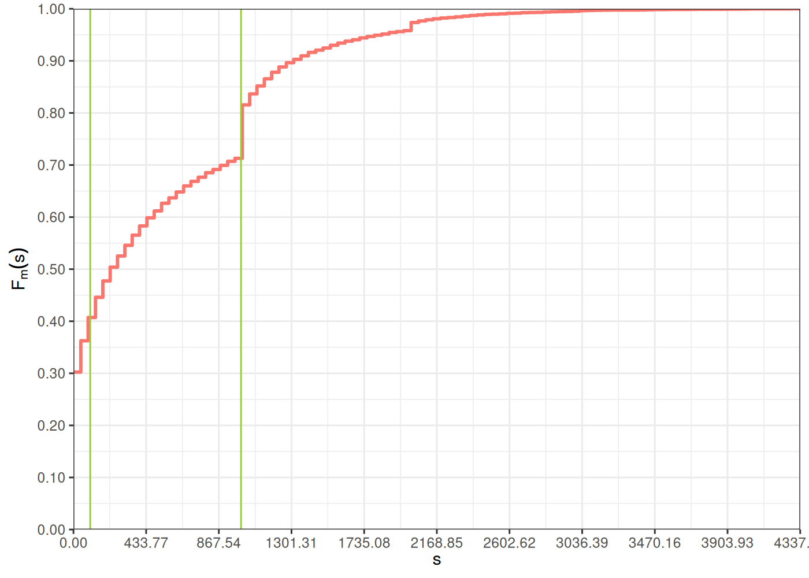
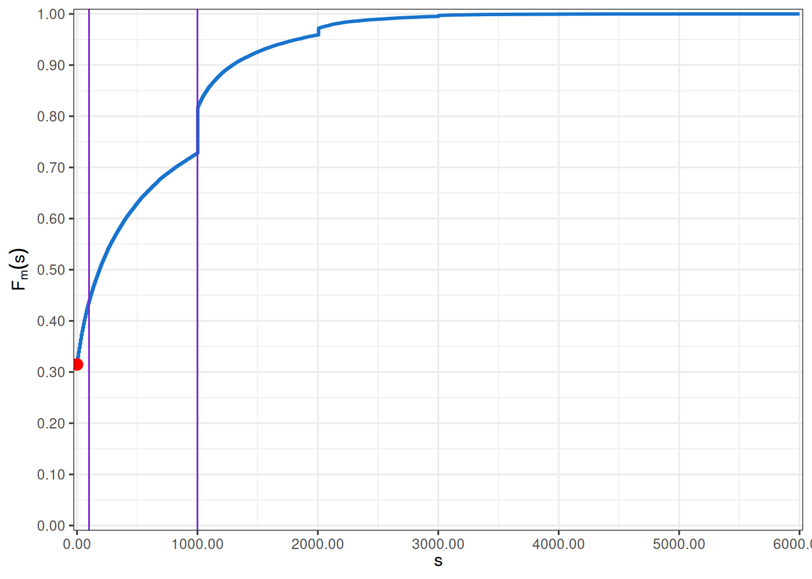
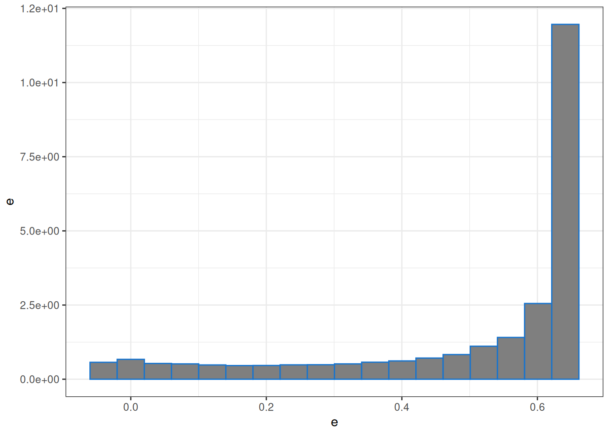
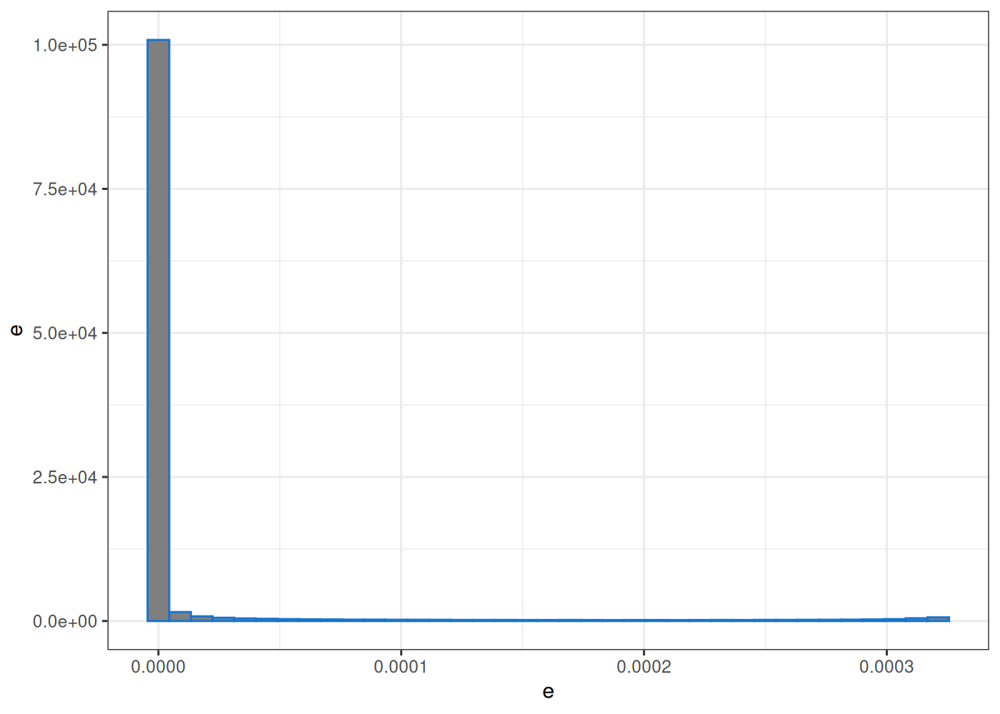
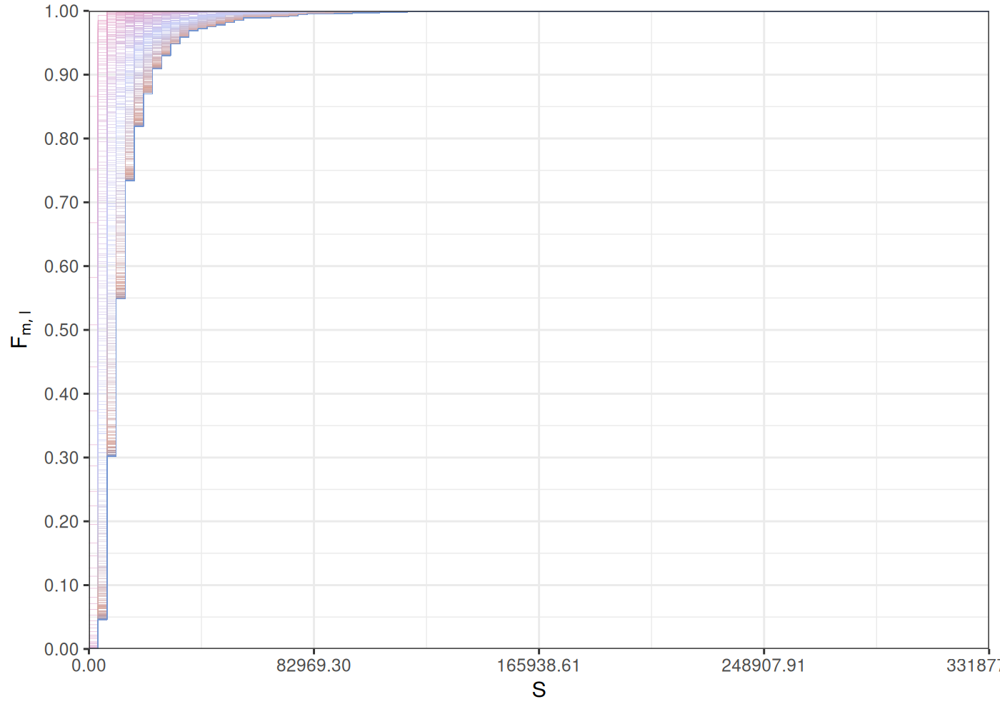
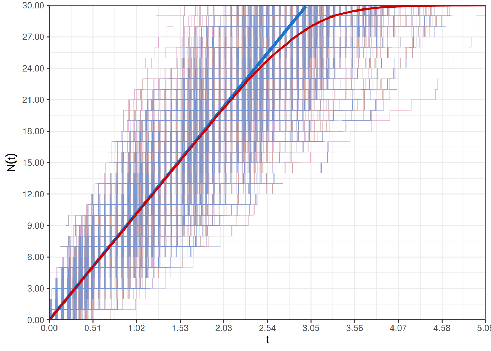
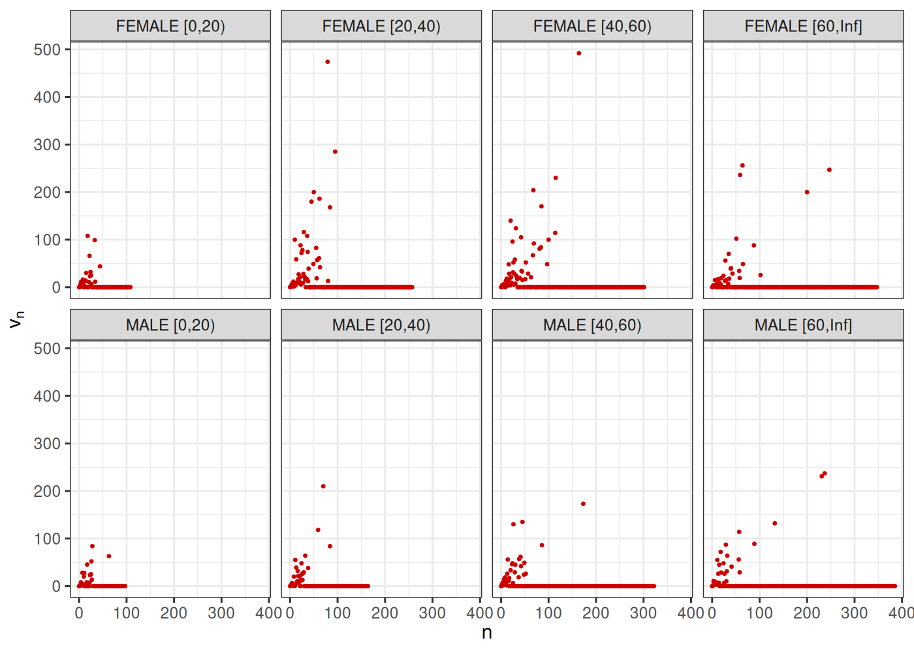
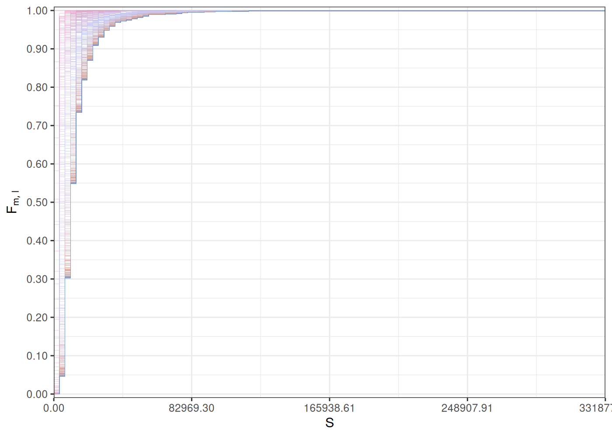
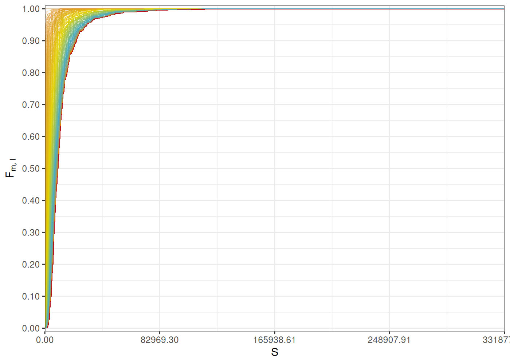

Capítulo 5 Modelos de pérdida agregada
5.1 Mutualización del riesgo
La idea de mantener un seguro está basada en la mutualización de los riesgos. La mutualización como tal nace del mismo mecanismo bajo el cual funciona un seguro, cada asegurado transfiera su riesgo individual a la compañia de seguros por su parte, la suma total de estos riesgos \(S\) es el riesgo total que asume el asegurador.
Los riesgos de cada uno de los \(n \in \mathbb{N}\) asegurados, pueden ser representados por variables aleatorias \(X_1,\ldots X_n\), las mismas pueden ser independientes o dependientes entre ellas. El costo total del portafolio está dado por la suma de todos estos riesgos. \[ S = \sum\limits_{i=1}^n X_i \] El conocer la distribución del costo total \(S\) es una tarea crucial para el asegurador.
El valore esperado de de los reclamos totales, puede ser calculado fácilmente utilizando las propiedades de linealidad de la esperanza matemática \(\mathbb{E}\) \[ \mathbb{E}[ S ] = \mathbb{E}\left[ \sum\limits_{i=1}^n X_i \right] = \sum\limits_{i=1}^n \mathbb{E}\left[ X_i \right] \] por su parte, la varianza de la variable aleatoria del costo total \(S\), está dada por: \[ \begin{eqnarray*} \mathbb{V}\left[ S \right] & = & \mathbb{V}\left[ \sum\limits_{i=1}^n X_i \right] \\ & = & \sum\limits_{i=1}^n \mathbb{V}\left[ X_i \right] + \sum\limits_{i=1}^n \sum\limits_{j=1,j\neq i}^n \mathbb{C}\left[ X_i, X_j \right] \\ & = & \sum\limits_{i=1}^n \mathbb{V}\left[ X_i \right] + 2\sum\limits_{i=1}^{n-1} \sum\limits_{j=i+1}^n \mathbb{C}\left[ X_i, X_j \right] \end{eqnarray*} \]
Muchas de las veces el número total de reclamos \(n\) es incierto y por tal razón es mejor considerar que el número de siniestros vendrá dado por otra variable aleatoria discreta \(N\) que solo tomará valores en \(\mathbb{N}\) \[ S = \sum\limits_{i=1}^N X_i \]
Esto nos lleva a considerar diferentes modelos de agregación de reclamos o pérdidas como se suele decir en inglés “loss models” [1], [2].
De forma preliminar estudiemos la forma general que podría tener la distribución de \(S\), sin realizar alguna hipótesis (previa sobre el comportamiento de las variables aleatorias \(X_1, \ldots, X_n\) y \(N\). \[ \begin{eqnarray*} F_S( s ) & = & P( S \leq s ) \\ & = & P\left( \sum\limits_{i=1}^N X_i \leq s \right) \\ & = & P\left( \sum\limits_{i=1}^N X_i \leq s \land N \in \mathbb{N}\right) \\ & = & P\left( \bigcup\limits_{n\in \mathbb{N}} \left\{ \sum\limits_{i=1}^N X_i \leq s \land N \in \{n\} \right\}\right) \\ & = & \sum\limits_{n=0}^{+\infty} P\left( \sum\limits_{i=1}^n X_i \leq s \land N = n \right) \qquad \text{probabilidad de eventos disjuntos} \\ & = & \sum\limits_{n=0}^{+\infty} P\left( \sum\limits_{i=1}^n X_i \leq s\ \middle|\ N = n \right) P( N = n ) \qquad \text{propiedades de la probabilidad condicional} \\ & = & \sum\limits_{n=0}^{+\infty} \int\limits_{\left\{\sum\limits_{i=1}^n x_i \leq s\right\}} dF_n( x_1, \ldots, x_n )\ p_n \qquad \text{$F_n$ es la distribución conjunta de $X_1, \ldots, X_n$ dado $N = n$} \end{eqnarray*} \] la última expresión es importante de retener, nos dice que para comprender el comportamiento de los reclamos totales \(S\), debemos estudiar y estimar la frecuencia de los reclamos \(N\), y también debemos comprender y estimar cada uno de los reclamos \(X_i\) y también su interacción, siendo al menos estos una infinidad si \(N\) puede tomar valores tendiendo al infinito. En términos resumidos, hay que comprender y estimar la frecuencia y severidad de los reclamos que están asociados al riesgo cubierto.
Los términos integrales \(\int\limits_{\left\{\sum\limits_{i=1}^n x_i \leq s\right\}} dF_n( x_1, \ldots, x_n )\) asociados a la severidad presentan un verdadero reto estadístico y computacional; hace unos años atrás se desarrolló unos nuevos algoritmos para calcular estos términos [3], [4].
5.2 Modelo individual
En el modelo de riesgos individuales consideramos que el número de siniestros que se producirán es conocido, por ejemplo puede ser a lo sumo el tamaño de la población asegurada, en tal caso la variable aleatoria \(N\) pasa a ser una constante, que representaremos por \(n\). De esta forma, la severidad total puede ser fácilmente representada por: \[ S = \sum\limits_{i=1}^n X_i \]
La hipótesis más usual que sostiene a este modelo es la indenpendencia entre cada uno de los reclamos \(X_i\) y \(X_j\) son independientes para cualquier \(1 \leq i \neq j \leq n\).
El valor esperado de la severidad total \(S\) es: \[ \begin{eqnarray*} \mathbb{E}[S] & = & \mathbb{E}\left[ \sum\limits_{i=1}^n X_i \right] \\ & = & \sum\limits_{i=1}^n \mathbb{E}\left[ X_i \right] \\ & = & n \mathbb{E}[X] \quad \text{si $\{X_i\}$ son idénticamente distribuidas} \end{eqnarray*} \]
Así mismo con la varianza de \(S\). \[ \begin{eqnarray*} \mathbb{V}\left[ S \right] & = & \mathbb{V}\left[ \sum\limits_{i=1}^n X_i \right] \\ & = & \sum\limits_{i=1}^n \mathbb{V}\left[ X_i \right] + \sum\limits_{i=1}^n \sum\limits_{j=1,j\neq i}^n \mathbb{C}\left[ X_i, X_j \right] \\ & = & \sum\limits_{i=1}^n \mathbb{V}\left[ X_i \right]\quad \text{si $\{X_i\}$ sin son independientes entre si} \\ & = & n \mathbb{V}\left[ X \right]\quad \text{si $\{X_i\}$ sin son idénticamente distribuidas} \end{eqnarray*} \]
Al tener un número determinado de reclamos \(n \in \mathbb{N}\), la distribución de probabilidad del total de reclamos \(S\) puede ser calculada de una forma maś sencilla. \[ \begin{eqnarray*} F_S( x ) & = & F_{X_1} \star \cdots \star F_{X_n} ( s )\quad \text{sin $\{X_i\}$ son independientes} \\ & = & F_{X}^{\star n}( s )\quad \text{si $\{X_i\}$ son idénticamente distribuidas} \end{eqnarray*} \]
así mismo, si las densidades de probabilidad están bien definidas, entonces \[ \begin{eqnarray*} f_S( s ) & = & f_{X_1} \star \cdots \star f_{X_n} ( s )\quad \text{sin $\{X_i\}$ son independientes} \\ & = & f_{X}^{\star n}( s )\quad \text{si $\{X_i\}$ son idénticamente distribuidas} \end{eqnarray*} \]
Una posible estrategia para estimar \(F_S\) o \(f_S\) es utilizar la transformada de Fourier \(\mathscr{F}\), la cual convierte las convoluciones en productos y luego invertir de nuevo la transformada de Fourier. \[ \begin{eqnarray*} F_S & = & \mathscr{F}^{-1}\left( \mathscr{F}\left( F_S \right) \right) \\ & = & \mathscr{F}^{-1}\left( \mathscr{F}\left( F_{X_1} \star \cdots \star F_{X_n} \right) \right) \quad \text{sin $\{X_i\}$ son independientes} \\ & = & \mathscr{F}^{-1}\left( \prod\limits_{i=1}^n \mathscr{F}\left( F_{X_i} \right) \right) \\ & = & \mathscr{F}^{-1}\left( \mathscr{F}\left( F_{X} \right)^n \right) \quad \text{si $\{X_i\}$ sin son idénticamente distribuidas } \end{eqnarray*} \]
o de forma equivalente para la densidad \(f_S\) \[ \begin{eqnarray*} f_S & = & \mathscr{F}^{-1}\left( \mathscr{F}\left( f_S \right) \right) \\ & = & \mathscr{F}^{-1}\left( \mathscr{F}\left( f_{X_1} \star \cdots \star f_{X_n} \right) \right) \quad \text{sin $\{X_i\}$ son independientes} \\ & = & \mathscr{F}^{-1}\left( \prod\limits_{i=1}^n \mathscr{F}\left( f_{X_i} \right) \right) \\ & = & \mathscr{F}^{-1}\left( \mathscr{F}\left( f_{X} \right)^n \right) \quad \text{si $\{X_i\}$ sin son idénticamente distribuidas } \end{eqnarray*} \] Por otra parte, la función característica de la variable aleatoria \(S\), está dada para todo \(t \in \mathbb{R}\): \[ \begin{eqnarray*} \varphi_S( t ) & = & \mathbb{E}\left[ \exp\left( it S \right) \right] \\ & = & \mathbb{E}\left[ \exp\left( it \sum\limits_{i=1}^n X_i \right) \right] \\ & = & \mathbb{E}\left[ \prod\limits_{i=1}^n \exp\left( it X_i \right) \right] \\ & = & \prod\limits_{i=1}^n \mathbb{E}\left[ \exp\left( it X_i \right) \right],\quad \text{si $\{X_i\}$ son independientes} \\ & = & \prod\limits_{i=1}^n \varphi_{X_i}\left( t \right) \\ & = & \varphi_{X}\left( t \right)^n,\quad \text{si $\{X\}$ son identicamente distribuidas} \\ \end{eqnarray*} \]
5.2.1 Algoritmo de simulación
Se puede simular la severidad total \(S\) para el caso donde se asume independencia entre cada una de las severidades \(X_1, \ldots, X_n\) y se conoce cada una de sus densidades de probabilidad \(f_{X_1}, \ldots, f_{X_n}\) o distribuciones de probabilidad \(F_{X_1}, \ldots, F_{X_n}\).
Se tiene fijo \(n \in \mathbb{N}\),
Se fija el número de simulaciones \(m \in \mathbb{N}\)
Para cada \(i \in \{1, \ldots, m\}\) se extrae una muestra \(X_{i,1} \rightsquigarrow f_{X_1},\ldots,X_{i,n} \rightsquigarrow f_{X_n}\),
Para cada \(i \in \{1, \ldots, m\}\) se calcula la severidad total para la muestra \(i\), \(S_i = \sum\limits_{j=1}^n X_{i,j}\)
Ejemplo 5.1 El siguiente código ejemplifica el algoritmo anterior, donde se asume que cada variable aleatoria de severidad \(X_i\) sigue una ley log-normal \(LN( \mu_i, \sigma_i )\), de parámetros \(\mu_i, \sigma_i\), para cada \(i \in \{1,\ldots, n\}\). El reclamo total \(S = \sum\limits_{i=1}^n X_i\) sigue una ley de probabilidad que estará dada por la convolución de cada una de las leyes de probabilidad de cada reclamo \(X_i\), sin embargo estas leyes en este ejemplo son log-normales y no se conoce una forma explícita, analítica para la convolución de log-normales. Por tal razón, debemos aproximar la distribución de probabilidad de \(F_S\) a partir de la distribución empírica.
Code
set.seed(94312)
# 1. número de distribuciones
n <- 200
# parámetros para las n distribuciones
mu <- seq( 1, 2, length.out = n )
sigma <- seq( 2, 3, length.out = n )
# 2. número de simulaciones
m <- 1e3
# 3. simulación de severidades
X <- lapply( 1:m, FUN = function( i ) sapply( 1:n, FUN = function( j ) rlnorm( 1, meanlog = mu[ j ], sdlog = sigma[ j ] ) ) )
# 4. simulación de severidad total
S <- sapply( X, FUN = function( x ) sum( x ) )Con ya lo mencionamos en este ejemplo densidad de probabilidad de la severidad \(S\) resulta de la convolución de las \(n\) densidades individuales \(f_S = f_{X_1} \star \cdots \star f_{X_n}\), la cual no presenta una forma analítica conocida.
De la imposibilidad anterior, como ya mencionamos se puede ver la utilidad de trabajar con la muestra aleatoria de la variable \(S\). De esta manera poder estimar la distribución acumulada de probabilidad \(F_S\) a partir de la distribución empírica \(F_m\) generada con la muestra \(\{S_i\}\). \[ F_S( s ) \approx F_m( s ) = \frac{1}{m} \sum\limits_{i=1}^m \mathbf {1}_{(-\infty,s]}( S_i ) \] el resultado de concentración 3.5 es más nos brinda un criterio de convergencia de \(F_m\) a \(F_S\)
Para construir \(F_m\) en R, se puede utilizar la función ya empaquetada ecdf (empirical cumulative
distribution function).
Code
Code
smax <- 2.0e5
plt <- ggplot() +
geom_step( aes( x = s, y = Fms ), colour = 'dodgerblue4', linewidth = 1 ) +
geom_vline( xintercept = c( EeS, ES ), colour = c( 'olivedrab3', 'gold3' ), linewidth = 1 ) +
scale_x_continuous( breaks = seq( 0, smax, length = 11 ),
labels = formatC( seq( 0, smax, length = 11 ), digits = 2, format = 'f' ),
limits = c( 0, smax ),
expand = c( 0, 0 ) ) +
scale_y_continuous( breaks = seq( 0, 1, length = 11 ),
labels = formatC( seq( 0, 1, length = 11 ), digits = 2, format = 'f' ),
limits = c( 0.0, 1.0 ),
expand = c( 0.005, 0.005 ) ) +
xlab( TeX( "$s$" ) ) +
ylab( TeX( "$F_m(s)$" ) ) +
theme_bw()
plot( plt )
Para calcular la esperanza de la severidad total \(S\), también se puede utilizar una aproximación a la integral de Riemann-Stieltjes utilizando la distribución acumulada empírica \(F_m\). \[ \mathbb{E}[ S ] = \int\limits_{\mathbb{R}} s dF_S( s ) \approx \int\limits_{\mathbb{R}} s dF_m( s ) \approx \sum\limits_{i=1}^N s_{i} \left( F_m( s_{i+1} ) - F_m( s_{i} ) \right) \]
Esta aproximación en R puede ser implementada de la siguiente forma:
Code
De ello tenemos los siguientes resultados de cálculo para el valor esperado de la severidad total \[ \begin{eqnarray*} \mathbb{E}[S] = \sum\limits_{i=1}^n e^{ \mu_i + \frac{1}{2} \sigma_i^2 } & = & 34562.7208, \\ \overline{S} = \frac{1}{m} \sum\limits_{i=1}^m S_i & = & 33515.9195, \\ \sum\limits_{i=1}^N s_{i} \left( F_m( s_{i+1} ) - F_m( s_{i} ) \right) & = & 33494.1981 \end{eqnarray*} \]
Lo bueno de poseer una buena aproximación a la distribución acumulada de una variable aleatoria, es que podemos calcular algunos otros valores de importancia relacionados a la variable aleatoria y no tan solo utilizar medidas de tendencia central. Sin embargo, para que esta aproximación sea útil se requiere reducir el error de probabilidad 3.5.
Ejemplo 5.2 Podemos considerar el caso sencillo donde el valor posible de severidad es determinista, es decir para cada póliza \(i\in \{1,\ldots,n\}\), el valor de severidad probable es único \(M > 0\) si en caso se da un evento \(A_i\), esto lo podemos expresar como \(X_i = M \mathbf{1}_{A_i}\) es constante. Así, pérdida total está dada por: \[ S = \sum\limits_{i=1}^n X_i = \sum\limits_{i=1}^n M \mathbf{1}_{A_i} \]
El valor total esperado de reclamos está dado por: \[ \mathbb{E}[ S ] = \sum\limits_{i=1}^n \mathbb{E}\left[ M \mathbf{1}_{A_i} \right] = M \sum\limits_{i=1}^n P( A_i ) \] la última igualdad resulta de las propiedades de la función indicatriz 3.10.
Si en caso todos los \(P(A_i) = p\) tienen la misma probabilidad, el valor total esperado de reclamos toma la siguiente forma: \[ \mathbb{E}[S] = n M p \]
5.3 Modelo colectivo
El modelo colectivo de riesgo considera un número de reclamos descritos por una variable aleatoria discreta \(N\). Los reclamos corresponden a un número de pólizas en un periodo específico, el valor de cada reclamo \(i \in \{1,\ldots,N\}\) está representado por las variables aleatorias \(X_i\). Usualmente, se considera que cada uno de los reclamos \(X_i\) están idénticamente distribuidos. \[ S = \left\{ \begin{array}{ll} \sum\limits_{i=1}^N X_i & \text{si}\ N > 0 \\ 0 & \text{si}\ N = 0 \end{array} \right. \] o de forma más compacta se puede tan definir \(S = \sum\limits_{i=1}^N X_i\), donde se asume que la suma da \(0\) si el número de elementos en la suma \(N = 0\).
El valor esperado del total de reclamos \(S\), está dado por: \[ \begin{eqnarray*} \mathbb{E}[S] & = & \mathbb{E}\left[ \sum\limits_{i=1}^N X_i \right] \\ & = & \sum\limits_{n=0}^{+\infty} \mathbb{E}\left[ \sum\limits_{i=1}^n X_i\ \middle|\ N = n \right]P( N = n ) \quad \text{utilizando la esperanza condicional} \\ & = & 0 P( N = 0 ) + \sum\limits_{n=1}^{+\infty} \mathbb{E}\left[ \sum\limits_{i=1}^n X_i\ \middle|\ N = n \right]P( N = n ) \\ & = & \sum\limits_{n=1}^{+\infty} \sum\limits_{i=1}^n \mathbb{E}\left[ X_i \mid N = n \right]P( N = n ) \quad \text{linealidad de la esperanza} \\ & = & \sum\limits_{n=0}^{+\infty} n \mathbb{E}\left[ X \mid N = n \right]P( N = n ) \quad \text{si $\{X_i\}$ son idénticamente distribuidas} \\ & = & \mathbb{E}\left[ X \right] \sum\limits_{n=0}^{+\infty} n P( N = n ) \quad \text{si $X$ y $N$ son independientes} \\ & = & \mathbb{E}[ N ] \mathbb{E}[ X ] \end{eqnarray*} \]
También podemos calcular la varianza de los reclamos totales \(S\), para ello necesitamos primeramente calcular su segundo momento. \[ \begin{eqnarray*} \mathbb{E}[S^2] & = & \mathbb{E}\left[ \left( \sum\limits_{i=1}^N X_i \right)^2 \right] \\ & = & \sum\limits_{n=0}^\infty \mathbb{E}\left[ \sum\limits_{i, j=1}^n X_i X_j \middle| N = n \right] P( N = n ) \quad \text{propiedades de la esperanza condicional} \\ & = & \sum\limits_{n=0}^\infty \sum\limits_{i, j=1}^n \mathbb{E}\left[ X_i X_j \right] P( N = n ) \quad \text{si $\{X_i\}$ y $N$ son independientes} \\ & = & \sum\limits_{n=0}^\infty \left( \sum\limits_{i=1}^n \mathbb{E}\left[ X_i^2 \right] + \sum\limits_{i,j=1,i\neq j}^n \mathbb{E}\left[ X_i X_j \right] \right) P( N = n ) \\ & = & \sum\limits_{n=0}^\infty \left( n \mathbb{E}\left[ X^2 \right] + n(n-1) \mathbb{E}\left[ X \right]^2 \right) P( N = n ) \quad \text{si $\{X_i\}$ son i.i.d} \\ & = & \mathbb{E}\left[N\right] \mathbb{E}\left[X^2\right] + \mathbb{E}\left[N^2\right] \mathbb{E}\left[X\right]^2 - \mathbb{E}\left[N\right] \mathbb{E}\left[X\right]^2 \\ & = & \mathbb{E}\left[N\right] \mathbb{V}\left[X\right] + \mathbb{E}\left[N^2\right] \mathbb{E}\left[X\right]^2 \end{eqnarray*} \]
finalmente la varianza de \(S\) tiene la siguiente expresión \[ \begin{eqnarray*} \mathbb{V}\left[S\right] & = & \mathbb{E}\left[S^2\right] - \mathbb{E}\left[S\right]^2 \\ & = & \mathbb{E}\left[N\right] \mathbb{V}\left[X\right] + \mathbb{E}\left[N^2\right] \mathbb{E}\left[X\right]^2 - \mathbb{E}\left[N\right]^2 \mathbb{E}\left[X\right]^2 \\ & = & \mathbb{E}\left[N\right] \mathbb{V}\left[X\right] + \mathbb{V}\left[N\right] \mathbb{E}\left[X\right]^2 \end{eqnarray*} \]
La distribución acumulada del reclamo total \(S\) tiene la forma: \[ \begin{eqnarray*} F_S( s ) & = & P( S \leq s ) \\ & = & P\left( \sum\limits_{i=1}^N X_i \leq s \right) \\ & = & \sum\limits_{n=0}^{+\infty} P\left( \sum\limits_{i=1}^n X_i \leq s \middle| N = n \right) P( N = n )\quad \text{utilizando la probabilidad condicional} \\ & = & \sum\limits_{n=0}^{+\infty} P\left( \sum\limits_{i=1}^n X_i \leq s \right) p_n\quad \text{si $X_i$ y $N$ son independientes} \\ & = & \sum\limits_{n=0}^{+\infty} F_{X_1} \star \cdots \star F_{X_n}( s ) p_n\quad \text{si $\{X_i\}$ son independientes} \\ & = & \sum\limits_{n=0}^{+\infty} F^{\star n}_{X}( s ) p_n\quad \text{si $\{X_i\}$ son idénticamente distribuidas} \end{eqnarray*} \] tomando \(F^{\star 0}_{X}( s ) = 1\).
Este último resultado muestra que la distribución de probabilidad de \(S\) no es más que una mixtura de las distribuciones para los modelos individuales \(F^{\star n}_{X}\) tomando para mezclarlas las probabilidades \(p_n = P( N = n )\) de la variable aleatoria discreta \(N\) que describe la frecuencia de los reclamos.
Al igual que lo realizamos para el modelo individual, podemos estimar \(F_S\) o \(f_S\) utilizando la transformada de Fourier \(\mathscr{F}\) \[ \begin{eqnarray*} F_S & = & \mathscr{F}^{-1}\left( \mathscr{F}\left( F_S \right) \right) \\ & = & \mathscr{F}^{-1}\left( \mathscr{F}\left( \sum\limits_{n=0}^{+\infty} F_{X_1} \star \cdots \star F_{X_n}( s ) p_n \right) \right) \quad \text{sin $\{X_i\}$ son independientes} \\ & = & \mathscr{F}^{-1}\left( \sum\limits_{n=0}^{+\infty} \prod\limits_{i=1}^n \mathscr{F}\left( F_{X_i} \right) p_n \right) \\ & = & \mathscr{F}^{-1}\left( \sum\limits_{n=0}^{+\infty} \mathscr{F}\left( F_{X} \right)^n p_n \right) \quad \text{si $\{X_i\}$ sin son idénticamente distribuidas } \end{eqnarray*} \]
o de forma equivalente para la densidad \(f_S\) \[ \begin{eqnarray*} f_S & = & \mathscr{F}^{-1}\left( \mathscr{F}\left( f_S \right) \right) \\ & = & \mathscr{F}^{-1}\left( \mathscr{F}\left( \sum\limits_{n=0}^{+\infty} f_{X_1} \star \cdots \star f_{X_n}( s ) p_n \right) \right) \quad \text{sin $\{X_i\}$ son independientes} \\ & = & \mathscr{F}^{-1}\left( \sum\limits_{n=0}^{+\infty} \prod\limits_{i=1}^n \mathscr{F}\left( f_{X_i} \right) p_n \right) \\ & = & \mathscr{F}^{-1}\left( \sum\limits_{n=0}^{+\infty} \mathscr{F}\left( f_{X} \right)^n p_n \right) \quad \text{si $\{X_i\}$ sin son idénticamente distribuidas } \end{eqnarray*} \]
En la práctica es imposible realizar la suma hasta infinito, de donde se puede utilizar una aproximación escogiendo un número máximo \(M \in \mathbb{N}\) de términos en la suma. Así, tenemos las aproximaciones.
Por otra parte, la función característica de la variable aleatoria \(S\), está dada para todo \(t \in \mathbb{R}\): \[ \begin{eqnarray*} \varphi_S( t ) & = & \mathbb{E}\left[ \exp\left( it S \right) \right] \\ & = & \mathbb{E}\left[ \exp\left( it \sum\limits_{i=1}^N X_i \right) \right] \\ & = & \sum\limits_{n=0}^{+\infty} \mathbb{E}\left[ \exp\left( it \sum\limits_{i=1}^n X_i \right) \middle| N = n \right] P( N = n ) \\ & = & \sum\limits_{n=0}^{+\infty} \mathbb{E}\left[ \prod\limits_{i=1}^n \exp\left( it X_i \right) \middle| N = n \right] p_n \\ & = & \sum\limits_{n=0}^{+\infty} \prod\limits_{i=1}^n \mathbb{E}\left[ \exp\left( it X_i \right) \middle| N = n \right] p_n,\quad \text{si $\{X_i\}$ son independientes} \\ & = & \sum\limits_{n=0}^{+\infty} \prod\limits_{i=1}^n \varphi_{X_i}\left( t \right) p_n,\quad \text{si $\{X_i\}$ y $N$ son independientes} \\ & = & \sum\limits_{n=0}^{+\infty} \varphi_{X}\left( t \right)^n p_n,\quad \text{si $\{X\}$ son identicamente distribuidas} \\ & = & \mathbb{E}\left[ \varphi_{X}\left( t \right)^N \right] \\ & = & \mathbb{E}\left[ \exp\left( N \log\left( \varphi_{X}\left( t \right) \right) \right) \right] \\ & = & \varphi_N\left( -i\log\left( \varphi_{X}\left( t \right) \right) \right) \\ \end{eqnarray*} \]
5.3.1 Algoritmo de simulación
La variable del reclamo total \(S\) puede ser simulada mediante el siguiente método montecarlo. Si \(N\) sigue una ley discreta \(f_N\) y cada valor severidad \(X\) son idénticamente distribuidos con ley \(f_X\).
Seleccionar el número de simulaciones \(m\),
Se genera una muestra de tamaño \(m\) de variables \(N_1, \ldots, N_m\) con ley \(f_N\),
Se genera para cada \(i \in \{1,\ldots,m\}\) una muestra de tamaño \(N_i\) de variables aleatorias \(X_{i,1}, \ldots X_{i,N_i}\) con ley \(f_X\),
Se calcula los reclamos totales \(S_1, \ldots, S_m\) para cada simulación \(i = \{1, \ldots, m\}\), mediante la siguiente suma \(S_i = \sum\limits_{j=1}^{N_i} X_{i,j}\).
En el lenguaje de programación R, este método de simulación puede ser fácilmente implementado,
como ya lo hemos realizado, utilizando las funciones de aplicación vectorial sapply y lapply.
Ejemplo 5.3 Consideramos el caso de un modelo colectivo para el cuál el conteo de siniestros \(N \rightsquigarrow Pois( \lambda )\) y la distribución de cada uno de los reclamos \(\{X_i\}_{i\in \mathbb{N}}\), está dada por la misma distribución de probabilidad \(X \rightsquigarrow LN( \mu, \sigma )\), siendo además cada uno de los reclamos indepencientes entre si.
Code
# 1. selección de simulaciones
m <- 1e4
# 2. especificación de los parámetros para las distribuciones
u <- 5
s <- 2
l <- 3
# 3. simulación del conteo de siniestros
N <- rpois( n = m, lambda = l )
# 4. simulación de la severidad de los reclamos
X <- lapply( N, FUN = function( n ) rlnorm( n, meanlog = u, sdlog = s ) )
# 5. reclamo total, agregación por cada simulación
S <- sapply( X, FUN = function( x ) sum( x, na.rm = TRUE ) )Es de notar que una algoritmo como el descrito tiene una falencia cuando la frecuencia de siniestros es poco observada, esto sucede cuando la probabilidad \(P( N = 0 )\) es alta y por tal razón para generar suficientes reclamos y así poder tener cálculos con una buena aproximación numérica, con el uso de simulaciones se necesitará muchas simulaciones.
Es interesante observar que el modelo colectivo puede ser muchas veces calculado de forma similar a un modelo individual, para ciertos casos particulares. Por ejemplo, si consideramos el caso cuando la variable aleatoria del conteo de siniestros \(N \rightsquigarrow Bin( n, p )\) sigue una distribución binomial con parámetros \(n\) y \(p\) y los reclamos individuales \(\{ X_i \}\) son i.i.d. A partir de esto, el reclamo total \(S\) puede ser expresado de dos formas \[ S = \sum\limits_{k=0}^{N} X_k = \sum\limits_{k=0}^n B_k X_k \] donde las variables aleatorias \(B_k \rightsquigarrow Ber( p )\) son independientes de las variables aleatorias \(X_k\) de cada uno de los reclamos. Así el modelo colectivo se transforma en un modelo individual con \(n\) constante y valores de reclamos individuales dados por la variable aleatoria \(Y_k = B_k X_k\).
Para este caso en particular \[ \begin{eqnarray*} \mathbb{E}[ S ] & = & \mathbb{E}\left[ \sum\limits_{k=0}^{n} B_k X_k \right] \\ & = & \sum\limits_{k=0}^{n} \mathbb{E}\left[ B_k X_k \right] \\ & = & n \mathbb{E}[ B X ] \\ & = & n \mathbb{E}[ B ] \mathbb{E}[ X ] \\ & = & n p \mathbb{E}[ X ] \end{eqnarray*} \]
así mismo, \[ \begin{eqnarray*} \mathbb{V}[ S ] & = & n \mathbb{V}[ B X ] \\ & = & n \left( \mathbb{E}[ B^2 X^2 ] - \mathbb{E}[ B X ]^2 \right) \\ & = & n \left( \mathbb{E}[ B^2 ] \mathbb{E}[ X^2 ] - \mathbb{E}[ B ]^2 \mathbb{E}[ X ]^2 \right) \\ & = & n \left( p \mathbb{E}[ X^2 ] - p^2 \mathbb{E}[ X ]^2 \right) \\ & = & n \left( p \mathbb{E}[ X^2 ] - p \mathbb{E}[ X ]^2 + p \mathbb{E}[ X ]^2 - p^2 \mathbb{E}[ X ]^2 \right) \\ & = & n \left( p \mathbb{V}[ X ] + p ( 1 - p ) \mathbb{E}[ X ]^2 \right) \\ & = & n \left( \mathbb{E}[B] \mathbb{V}[ X ] + \mathbb{V}[B] \mathbb{E}[ X ]^2 \right) \end{eqnarray*} \]
Ejemplo 5.4 Hacemos uso del algoritmo de simulación, pero bajo la consideración anterior donde el conteo de siniestros \(N \rightsquigarrow Bin( n, p )\), en algunos casos se puede considerar \(n\) como el número de pólizas vendidas, esto supone que solo se presenta un reclamo por póliza. Por su parte los reclamos consideraremos \(X_i \rightsquigarrow LN( \mu, \sigma )\), para todo \(i \in \{1,\ldots,n\}\). Si consideramos generar la simulación como un modelo individual, generamos variables aleatorias \(B_i \rightsquigarrow Ber(p)\), para todo \(i \in \{1,\ldots,n\}\).
Code
m <- 1e4
n <- 1000
p <- 0.2
mu <- 5
sigma <- 2
B <- lapply( 1:m, FUN = function( i ) rbinom( n, size = 1, prob = p ) )
X <- lapply( 1:m, FUN = function( i ) rlnorm( n, meanlog = mu, sdlog = sigma ) )
S <- sapply( 1:m, FUN = function( i ) sum( B[[ i ]] * X[[ i ]], na.rm = TRUE ) )
EeS <- mean( S )
ES <- n * p * exp( mu + 0.5 * sigma^2 )\[ \begin{eqnarray*} \mathbb{E}[S] = n p e^{ \mu + \frac{1}{2} \sigma^2 } & = & 219326.6317, \\ \overline{S} = \frac{1}{m} \sum\limits_{i=1}^m S_i & = & 219346.3972, \end{eqnarray*} \]
Es importante observar que si la frecuencia de reclamos es superior a \(1\), sea este por póliza, individuo o en general por unidad asegurada, la aproximación anterior no es la correcta si no se realiza un ajuste al valor \(n\) que es el número máximo de siniestros. Sino también, se puede considera que las variables de los reclamos es la suma total de reclamos por póliza.
Por otra parte, es de notar que en el cálculo hay un gasto innecesario de valores simulados de reclamos \(X_i\) ya que algunos se multiplicaran por \(B_i\), la cual solo toma valores \(\{0,1\}\).
5.4 Modelos mixtos
En algunos casos en particular se considera un modelo de agregación que es una mixtura entre el modelo individual y el modelo colectivo. Se parte de considerar un número \(n\) de unidades aseguradas donde para cada unidad \(i \in \{1, \ldots, n\}\), se considera que puede presentar una cantidad de reclamos dados por una variable aleatoria discreta \(N_i\), y así para cada presentar un número de reclamos \(X_{i,1}, \ldots, X_{i,N_i}\). Así el reclamo total viene dado por la expresión \[ S = \sum\limits_{i=1}^n X_i = \sum\limits_{i=1}^n \sum\limits_{j=1}^{N_i} X_{i,j} \]
5.5 Modelos con variables explicativas
En algunos casos más generales, donde la población presenta heterogeneidad respecto del riesgo al cual están expuestos, como también de las dimensiones de sus reclamos, se considera que existen variables aleatorias adicionales \(Y_1, \ldots, Y_n\) que determinan el número de reclamos \(N\) y el valor de los siniestros \(\{X_i\}\). Es decir no hay independencia entre \(\{Y_j\}\) y \(N\) así como tampoco entre \(\{Y_j\}\) y \(\{X_i\}\). Es así que un modelo colectivo \(S = \sum\limits_{i=1}^N X_i\) su estudio, estimación y tarificación debe ser realizada de forma condicional respecto de las variables aleatorias explicativas \(\{Y_j\}\), \[ \mathbb{E}[ S ] = \mathbb{E}\left[ \mathbb{E}\left[ S \middle| Y_1, \ldots, Y_n \right] \right] \] de donde es necesario estimar cada una de las esperanzas condicionadas \(\mathbb{E}\left[ S \middle| Y_1, \ldots, Y_n \right]\).
En la práctica las variables explicativas \(\{ Y_j \}\) suelen ser seleccionadas para caracterizar el perfil de riesgo de cada cliente. Para su selección se suele utilizar algunos criterios de tipo económico, financiero, legal y estadístico.
5.6 Aplicación del deducible
En muchas ocasiones según las condiciones de los contratos de seguro y el apetito de riesgo del asegurador, se configura funciones deducibles sobre los reclamos. El objetivo de aplicar un deducible es evitar valores de reclamo en determinados rangos que no están acorde a las configuraciones y estructuración de productos de seguro. Por ejemplo: se puede colocar un deducible para evitar el pago de valores muy pequeños de reclamos, cuya atención incluso puede implicar costos operativos o administrativos mayores al valor mismo de los reclamos, ante esta situación se coloca una cota mínima para que de esta forma el asegurado se haga cargo por su cuenta por estos valores menores.
Es usual colocar mínimos en las colas de la distribución de reclamos, evitando así valores muy pequeños o valores muy grandes, pero no sería sustentable, ni financieramente o económicamente, el colocar un deducible justo donde se presenta la mayor parte de los valores de reclamos. Desde la perspectiva de un asegurado, ¿De qué serviría adquirir una póliza que no cubre precisamente los siniestros más usuales?, esta no sería una póliza apetecible en el mercado y por otra parte un producto difícil de comercializar.
De forma algo más puntual, un deducible es una función \(D : \mathbb{R}\longrightarrow \mathbb{R}_+\), tal que para toda variable aleatoria \(X\), se satisface la siguiente desigualdad \(D( X ) \leq X\).
- Para evitar pérdidas pequeñas se suele configurar la función deducible \(D( X ) = \max( X - d, 0 )\), en este caso si \(X \rightsquigarrow F_X\), entonces \(Z = D( X ) \rightsquigarrow F_Z( z )\), donde \(F_Z( z ) = \mathbf{1}_{[d,+\infty)}( z ) F_X( z + d )\).
Code
D <- function( x, d ) return( max( x - d, 0 ) )
d <- 50
alpha <- 2
gamma <- 4
tau <- 5
theta <- 80
n <- 1e3
xmax <- 5e2
x <- seq( 0, xmax, length = n )
FX <- sapply( x, FUN = function( x ) ptrbeta( x, shape1 = alpha, shape2 = gamma, shape3 = tau, scale = theta ) )
FDX <- sapply( x, FUN = function( x ) ifelse( x >= d, 1, 0 ) * ptrbeta( x + d, shape1 = alpha, shape2 = gamma, shape3 = tau, scale = theta ) )
plt <- ggplot( ) +
geom_line( aes( x = x, y = FX, colour = 'a' ), linewidth = 2 ) +
geom_line( aes( x = x, y = FDX, colour = 'b' ), linewidth = 1 ) +
scale_colour_manual( breaks = c( 'a', 'b' ),
values = c( 'dodgerblue3', 'red3' ) ) +
scale_x_continuous( breaks = seq( 0, xmax, length = 11 ),
labels = formatC( seq( 0, xmax, length = 11 ), digits = 2, format = 'f' ),
limits = c( 0, xmax ),
expand = c( 0, 0 ) ) +
scale_y_continuous( breaks = seq( 0, 1, length = 11 ),
labels = formatC( seq( 0, 1, length = 11 ), digits = 2, format = 'f' ),
limits = c( 0.0, 1.0 ),
expand = c( 0.005, 0.005 ) ) +
xlab( TeX( "$x$" ) ) +
ylab( TeX( "$F_X, F_{D(X)}$" ) ) +
theme_bw() +
theme( legend.position = "none" )
plot( plt )
- Para prevenir los excesos de pérdida (stop loss) \(D( X ) = \min( X, M )\), en este caso si \(X \rightsquigarrow F_X\), entonces \(Z = D( X ) \rightsquigarrow F_Z( z )\), donde \(F_Z( z ) = \mathbf{1}_{(-\infty,M)}( z ) F_X( z ) + \mathbf{1}_{[M,+\infty)}( z )\).
Code
D <- function( x, M ) return( min( x, M ) )
M <- 150
alpha <- 2
gamma <- 4
tau <- 5
theta <- 80
n <- 1e3
xmax <- 5e2
x <- seq( 0, xmax, length = n )
FX <- sapply( x, FUN = function( x ) ptrbeta( x, shape1 = alpha, shape2 = gamma, shape3 = tau, scale = theta ) )
FDX <- sapply( x, FUN = function( x ) ifelse( x < M, 1, 0 ) * ptrbeta( x, shape1 = alpha, shape2 = gamma, shape3 = tau, scale = theta ) + ifelse( x >= M, 1, 0 ) )
plt <- ggplot( ) +
geom_line( aes( x = x, y = FX, colour = 'a' ), linewidth = 2 ) +
geom_line( aes( x = x, y = FDX, colour = 'b' ), linewidth = 1 ) +
scale_colour_manual( breaks = c( 'a', 'b' ),
values = c( 'dodgerblue3', 'red3' ) ) +
scale_x_continuous( breaks = seq( 0, xmax, length = 11 ),
labels = formatC( seq( 0, xmax, length = 11 ), digits = 2, format = 'f' ),
limits = c( 0, xmax ),
expand = c( 0, 0 ) ) +
scale_y_continuous( breaks = seq( 0, 1, length = 11 ),
labels = formatC( seq( 0, 1, length = 11 ), digits = 2, format = 'f' ),
limits = c( 0.0, 1.0 ),
expand = c( 0.005, 0.005 ) ) +
xlab( TeX( "$x$" ) ) +
ylab( TeX( "$F_X, F_{D(X)}$" ) ) +
theme_bw() +
theme( legend.position = "none" )
plot( plt )
- Caso mixto para evitar pérdidas pequeñas y exceso de pérdida \(D( X ) = \min( \max( X - d, 0 ), M )\), en este caso si \(X \rightsquigarrow F_X\), entonces \(Z = D( X ) \rightsquigarrow F_Z( z )\), donde \(F_Z( z ) = \mathbf{1}_{[a,M)}( z ) F_X( z + d ) + \mathbf{1}_{[M,+\infty)}( z )\).
Code
D <- function( x, M ) return( min( max( x - d ), M ) )
d <- 50
M <- 150
alpha <- 2
gamma <- 4
tau <- 5
theta <- 80
n <- 1e3
xmax <- 5e2
x <- seq( 0, xmax, length = n )
FX <- sapply( x, FUN = function( x ) ptrbeta( x, shape1 = alpha, shape2 = gamma, shape3 = tau, scale = theta ) )
FDX <- sapply( x, FUN = function( x ) ifelse( x < M & x >= d, 1, 0 ) * ptrbeta( x + d, shape1 = alpha, shape2 = gamma, shape3 = tau, scale = theta ) + ifelse( x >= M, 1, 0 ) )
plt <- ggplot( ) +
geom_line( aes( x = x, y = FX, colour = 'a' ), linewidth = 2 ) +
geom_line( aes( x = x, y = FDX, colour = 'b' ), linewidth = 1 ) +
scale_colour_manual( breaks = c( 'a', 'b' ),
values = c( 'dodgerblue3', 'red3' ) ) +
scale_x_continuous( breaks = seq( 0, xmax, length = 11 ),
labels = formatC( seq( 0, xmax, length = 11 ), digits = 2, format = 'f' ),
limits = c( 0, xmax ),
expand = c( 0, 0 ) ) +
scale_y_continuous( breaks = seq( 0, 1, length = 11 ),
labels = formatC( seq( 0, 1, length = 11 ), digits = 2, format = 'f' ),
limits = c( 0.0, 1.0 ),
expand = c( 0.005, 0.005 ) ) +
xlab( TeX( "$x$" ) ) +
ylab( TeX( "$F_X, F_{D(X)}$" ) ) +
theme_bw() +
theme( legend.position = "none" )
plot( plt )
- En otros casos más elaborados se segmenta el riesgo cubierto, al existir variables explicativas de la naturaleza del riesgo \(Y_1, \ldots, Y_m\), las cuales pueden tomar valores en un conjunto \(E\) solo se toma un subconjunto de valores posibles \(A\subset E\), para los cuales es válida la cobertura. Así si un reclamo \(X\) se explica o caracteriza por las variables anteriores se configura el deducibles \(D( X ) = \mathbf{1}_{A}\left( Y_1, \ldots, Y_m \right) X\).
Un ejemplo del anterior deducible se suele dar en el caso de seguros de salud, donde se cubre ciertos tipos de enfermedades, usualmente se suele evitar las enfermedades de tipo catastrófico que estén ya presentes, en otros productos se evita los gastos odontológicos, etc.
Los deducibles, pueden ser configurados de forma genérica para todos los asegurados o incluso de forma personalizada por asegurado, según los productos que estos han adquirido. En general, al emplear deducibles para cada uno de los reclamos individuales, el reclamo total \(S\) se ve modificado, y toma la forma: \[ S = \sum\limits_{i=1}^{N} D_i\left( X_i \right) \] Hay casos donde se aplica el deducible al grupo de siniestros que presenta una póliza o grupo de pólizas. Esto precisamente se lo puede ver cuando se utiliza un modelo mixto de pérdida. \[ S = \sum\limits_{i=1}^n D_i\left( \sum\limits_{n=1}^{N_i} X_{i,j} \right) \]
Este caso se suele presentar en los productos que partir de una suma parcial de reclamos individuales, el deducible comienza a regir.
5.6.1 Algoritmo de simulación
Presentamos una adaptación sencilla de los algoritmos de simulación anterior, incluyendo el caso que se tenga un deducible aplicado de forma uniforme a todas las pólizas.
Seleccionar el número de simulaciones \(m\),
Se genera una muestra de tamaño \(m\) de variables \(N_1, \ldots, N_m\) con ley \(f_N\),
Se genera para cada \(i \in \{1,\ldots,m\}\) una muestra de tamaño \(N_i\) de variables aleatorias \(X_{i,1}, \ldots X_{i,N_i}\) con ley \(f_X\),
Se establece la función deducible \(D : \mathbb{R}\longrightarrow \mathbb{R}_+\) y los parámetros y condiciones necesarias para su definición,
Se calcula los reclamos totales utilizando el deducible \(S_1, \ldots, S_m\) para cada simulación \(i = \{1, \ldots, m\}\), mediante la siguiente suma \(S_i = \sum\limits_{j=1}^{N_i} D\left( X_{i,j} \right)\),
Para la determinación de varios estadísticos se puede utilizar la simulación generada \(\{S_i\}\) y generar la distribución de probabilidad empírica \(F_m\).
Ejemplo 5.5 Consideremos el caso de un modelo colectivo de pérdida donde el proceso de conteo \(N \rightsquigarrow Pois( \lambda )\) y la sucesión \(\{X_i\}\) de reclamos individuales se considera conformada por variables i.i.d, con distribución de probabilidad \(LN( \mu, \sigma )\). El deducible a aplicar será una función mixta de la forma \(D( X ) = \min( \max( X - d, 0 ), M )\).
Code
# 1. selección de simulaciones
m <- 5e4
# 2. especificación de los parámetros para las distribuciones
u <- 2
s <- 3
lambda <- 6
# 3. se especifica la función deducible
D <- function( x, d, M ) {
return( min( max( x - d, 0 ), M ) )
}
set.seed( 312341 )
# 4. simulación del conteo de siniestros
N <- rpois( n = m, lambda = lambda )
# 5. simulación de la severidad de los reclamos
X <- lapply( N, FUN = function( n ) rlnorm( n, meanlog = u, sdlog = s ) )
# 6. se aplica el deducible a los reclamos
d <- 100
M <- 1000
DX <- lapply( X, FUN = function( x ) sapply( x, FUN = function( y ) D( y, d, M ) ) )
# 7. reclamo total, agregación por cada simulación
S <- sapply( X, FUN = function( x ) ifelse( length( x ) == 0, 0, sum( x, na.rm = TRUE ) ) )
DS <- sapply( DX, FUN = function( x ) ifelse( length( x ) == 0, 0, sum( x, na.rm = TRUE ) ) )El efecto del deducible sobre la distribución del reclamo es evidente, produciendo así una densidad multimodal, como se observa en el gráfico a continuación, en el mismo incluimos dos histogramas, uno correspondiente a los reclamos totales sin aplicar el deducible y el otro el histograma de los reclamos totales aplicados el deducible..
Code
smax <- lambda * M
fmax <- 0.002
plt <- ggplot( ) +
geom_histogram( aes( S, after_stat( density ) ), fill = 'olivedrab3', colour = 'olivedrab4', alpha = 0.3, bins = nclass.FD( DS ) ) +
geom_histogram( aes( DS, after_stat( density ) ), fill = 'dodgerblue3', colour = 'dodgerblue4', alpha = 0.6, bins = nclass.FD( DS ) ) +
scale_x_continuous( breaks = seq( 0, smax, length = 7 ),
labels = formatC( seq( 0, smax, length = 7 ), digits = 2, format = 'f' ),
limits = c( 0, smax ),
expand = c( 0, 0 ) ) +
scale_y_continuous( breaks = seq( 0, fmax, length = 11 ),
labels = formatC( seq( 0, fmax, length = 11 ), digits = 4, format = 'f' ),
limits = c( 0, fmax ),
expand = c( 0, 0 ) ) +
xlab( TeX( "$s$" ) ) +
ylab( TeX( "$f_S$" ) ) +
theme_bw() +
theme( legend.position = "none" )
plot( plt )
Es de notar que la probabilidad del evento \(\{S=0\}\) no es nula y se debe a la aplicación del deducible. \[ \begin{eqnarray*} P( S = 0 ) & = & P\left( \left\{ S = 0 \middle| N \in \mathbb{N}\right\} \right) \\ & = & P\left( \bigcup\limits_{n=0}^{+\infty} \left\{ S = 0 \land N = n \right\} \right) \\ & = & P\left( \bigcup\limits_{n=0}^{+\infty} \left\{ D( X_1 ) + \cdots + D( X_N ) = 0 \land N = n \right\} \right) \\ & = & P\left( \bigcup\limits_{n=0}^{+\infty} \left\{ X_1 \leq d \land \cdots \land X_N \leq d \land N = n \right\} \right) \\ & = & \sum\limits_{n=0}^{+\infty} P\left( X_1 \leq d \land \cdots \land X_N \leq d \land N = n \right) \\ & = & \sum\limits_{n=0}^{+\infty} P\left( X_1 \leq d \land \cdots \land X_n \leq d \middle| N = n \right)P( N = n ) \\ & = & \sum\limits_{n=0}^{+\infty} P\left( X_1 \leq d \land \cdots \land X_n \leq d \right) P( N = n ) \\ & = & \sum\limits_{n=0}^{+\infty} P\left( X \leq d \right)^n p_n \\ & = & \mathbb{E}\left[ P\left( X \leq d \right)^N \right] \\ & \approx & \sum\limits_{n=0}^{n'} P( X \leq d )^n p_n,\quad \text{para un valor $n'$ suficientemente grande} \end{eqnarray*} \]
Code
\[ P( S = 0 ) = 0.314886664 \]
Así mismo, se puede estudiar el evento extremo, caso en el cual se paga el valor máximo que admite el deducible, en este caso en particular es \(M\) por cada siniestro y si se producen \(n\), entonces como máximo se pagara \(n M\). Por tanto, nos interesa la probabilidad del evento \(\{ S\ \text{es máximo} \}\), el cual lo podemos calcular como: \[ \begin{eqnarray*} P( S\ \text{es máximo} ) & = & P\left( \left\{ S = NM \middle| N \in \mathbb{N}\right\} \right) \\ & = & P\left( \bigcup\limits_{n=0}^{+\infty} \left\{ S = N M \land N = n \right\} \right) \\ & = & P\left( \bigcup\limits_{n=0}^{+\infty} \left\{ D( X_1 ) + \cdots + D( X_N ) = N M \land N = n \right\} \right) \\ & = & P\left( \bigcup\limits_{n=0}^{+\infty} \left\{ X_1 - d > M \land \cdots \land X_N - d \geq M \land N = n \right\} \right) \\ & = & P\left( \bigcup\limits_{n=0}^{+\infty} \left\{ X_1 > M + d \land \cdots \land X_N \geq M + d \land N = n \right\} \right) \\ & = & \sum\limits_{n=0}^{+\infty} P\left( X_1 > M + d \land \cdots \land X_N > M + d \land N = n \right) \\ & = & \sum\limits_{n=0}^{+\infty} P\left( X_1 > M + d \land \cdots \land X_n > M + d \middle| N = n \right) P( N = n ) \\ & = & \sum\limits_{n=0}^{+\infty} P\left( X_1 > M + d \land \cdots \land X_n > M + d \right) P( N = n ) \\ & = & \sum\limits_{n=0}^{+\infty} P\left( X > M + d \right)^n p_n \\ & = & \mathbb{E}\left[ P\left( X > M + d \right)^N \right] \\ & \approx & \sum\limits_{n=0}^{n'} P( X > M + d )^n p_n,\quad \text{para un valor $n'$ suficientemente grande} \end{eqnarray*} \]
Code
\[ P( S\ \text{es máximo} ) = 0.003299886 \] Además, podemos calcular el valor máximo esperado de \(S\). \[ \begin{eqnarray*} \mathbb{E}\left[ S \middle| S\ \text{es máximo} \right] & = & \mathbb{E}\left[ S \middle| \left\{ S = NM \middle| N \in \mathbb{N}\right\} \right] \\ & = & \mathbb{E}\left[ S \middle| \bigcup\limits_{n=0}^{+\infty} \left\{ S = NM \land N = n \right\} \right] \\ & = & \mathbb{E}\left[ NM \middle| \bigcup\limits_{n=0}^{+\infty} \left\{ N = n \right\} \right] \\ & = & \sum\limits_{n=0}^{+\infty} \mathbb{E}\left[ n M \middle| N = n \right] P( N = n ) \\ & = & \sum\limits_{n=0}^{+\infty} n M P( N = n ) \\ & = & M \sum\limits_{n=0}^{+\infty} n P( N = n ) \\ & = & M \mathbb{E}\left[ N \right] \\ \end{eqnarray*} \]
\[ \mathbb{E}\left[ S \middle| S\ \text{es máximo} \right] = 6000.00 \]
De este razonamiento se puede evidenciar que al aplicar un deducible con cota superior, se corta la cola de la distribución y por tal razón no se puede esperar valores extremos por parte de la severidad, sino tan solo por un aumento de frecuencia, e incluso el valor máximo esperado es proporcional a la cota superior \(M\) veces la frecuencia esperada. De ahí que, al aplicar un deducible con cota superior no se puede esperar un encarecimiento de primas por aumento de severidad, ya que los reclamos están acotados, así como el máximo esperado; lo único que puede encarecer la prima es un aumento de frecuencia.
Como ya se lo mencionó, utilizando la simulación \(\{S_i\}\) podemos determinar la distribución de probabilidad empírica \(F_m\) que aproxima la distribución de \(F_S\).
Code
Code
Smax <- ESmax
xbrk <- sort( unique( c( d, M, seq( 0, Smax, length = 7 ) ) ) )
xlbl <- formatC( xbrk, digits = 0, format = 'f' )
xlim <- c( 0, Smax )
ybrk <- seq( 0, 1, length = 11 )
ylbl <- formatC( ybrk, digits = 2, format = 'f' )
ylim <- c( 0, 1 )
plt <- ggplot( ) +
geom_step( aes( x = s, y = Fes, colour = 'a' ), linewidth = 1 ) +
geom_step( aes( x = s, y = FeDs, colour = 'b' ), linewidth = 1 ) +
geom_vline( xintercept = c( d, M ), colour = 'orange', linewidth = 0.7 ) +
geom_point( aes( 0, PS0 ), colour = 'red3', size = 3 ) +
scale_colour_manual( breaks = c( 'a', 'b' ),
values = c( 'olivedrab4', 'dodgerblue4' ) ) +
scale_x_continuous( breaks = xbrk,
labels = xlbl,
limits = xlim,
expand = c( 0.008, 0.008 ) ) +
scale_y_continuous( breaks = ybrk,
labels = ylbl,
limits = ylim,
expand = c( 0.005, 0.005 ) ) +
xlab( TeX( "$s$" ) ) +
ylab( TeX( "$F_{S,m},F_{S^D,m}$" ) ) +
theme_bw() +
theme( legend.position = "none" )
plot( plt )
5.7 Algoritmo de Panjer
El siguiente algoritmo es de especial interés para determinar la densidad de probabilidad \(f_S\) del total de reclamos \(S\). Se asume que el conteo de siniestro \(N\) viene dado por alguna de las distribuciones en la familia \((a,b,0)\) y los reclamos individuales son \(\{X_i\}\) son i.i.d y también independientes de \(N\). En ese contexto podemos observar que para cualquier \(s > 0\), tenemos: \[ \begin{eqnarray*} f_S( s ) & = & \sum\limits_{n=1}^{+\infty} p_n f_X^{\star n}( s ) \\ & = & p_1 f_X( s ) + \sum\limits_{n=2}^{+\infty} p_n f_X^{\star n}( s ) \\ & = & p_1 f_X( s ) + \sum\limits_{n=1}^{+\infty} p_{n+1} f_X^{\star n + 1}( s ) \\ & = & p_1 f_X( s ) + \sum\limits_{n=1}^{+\infty} \left( a + \frac{b}{n+1} \right) p_{n} f_X^{\star n + 1}( s ) \\ & = & p_1 f_X( s ) + \sum\limits_{n=1}^{+\infty} p_{n} \int\limits_0^s \left( a + \frac{b y}{s} \right) f_X( y ) f_X^{\star n}( s - y )\ dy \\ & = & p_1 f_X( s ) + \int\limits_0^s \left( a + \frac{b y}{s} \right) f_X( y ) \sum\limits_{n=1}^{+\infty} p_{n} f_X^{\star n}( s - y )\ dy \\ & = & p_1 f_X( s ) + \int\limits_0^s \left( a + \frac{b y}{s} \right) f_X( y ) f_S( s - y )\ dy \end{eqnarray*} \] cuando \(s = 0\), la probabilidad se concentra en \(0\), y por tanto \(f_S( 0 ) = p_0\)
Como consecuencia del análisis anterior resulta la relación recurrente, la cual es precisamente explotada de forma numérica por el algoritmo de Panjer. \[ f_S( s ) = p_1 f_X( s ) + \int\limits_0^s \left( a + \frac{b y}{s} \right) f_X( y ) f_S( s - y )\ dy, \qquad \forall s > 0 \]
Si se toma una discretización \(0 = s_0 < s_1 < \cdots < s_n\) para aproximar la integral anterior \[ f_S\left( s_k \right) = p_1 f_X\left( s_k \right) + \sum\limits_{i=0}^{k-1} \left( a + \frac{b s_i}{s_k} \right) f_X\left( s_i \right) f_S\left( s_{k-i} \right) \left( s_{i+1} - s_i \right) \]
Al tomar un división uniforme para la malla utilizada para aproximar la integral, por ejemplo \(s_k = k h\), tenemos que: \[ f_S\left( s_k \right) = p_1 f_X\left( s_k \right) + h \sum\limits_{i=0}^{k-1} \left( a + \frac{b i}{k} \right) f_X\left( s_i \right) f_S\left( s_{k-i} \right) \] de donde resulta una forma bien conocida para el algoritmo de Panjer. sin embargo, es importante tener en cuenta que una malla de paso no constante puede ser mejor adaptada para realizar la integral.
Ejemplo 5.6 Consideremos el caso para un reclamo total \(S\) donde el conteo de los siniestros \(N \rightsquigarrow NBin( \alpha, p )\) y las severidades \(\{X_i\}\) son i.i.d con distribución \(LN( \mu, \sigma )\). Utilizaremos el algoritmo de Panjer para aproximar la densidad de probabilidad de \(f_S\) de \(S\).
Code
n <- 7e3
p <- 0.3
alpha <- 3
a <- 1 - p
b <- ( 1 - p ) * ( alpha - 1 )
p0 <- p^alpha
u <- 5
s <- 0.3
smax <- 5e3
dist <- dlnorm
pardist <- list( meanlog = u, sdlog = s )
sg <- seq( 0, smax, length = n )
ds <- diff( sg )
fX <- sapply( sg, FUN = function( y ) do.call( dist, c( y, pardist ) ) )
fS <- p0
K <- 1
p1 <- ( a + b ) * p0
for ( k in 2:n ) {
fS <- c( fS, p1 * fX[ k ] + sum( ( a + b * sg[ K ] / sg[ k ] ) * fX[ K ] * fS[ rev( K ) ] * ds[ K ] ) )
K <- c( K, k )
}
set.seed( 32141223 )
m <- 1e5
N <- rnbinom( n = m, size = alpha, prob = p )
X <- lapply( N, FUN = function( n ) rlnorm( n, meanlog = u, sdlog = s ) )
S <- sapply( X, FUN = function( x ) sum( x, na.rm = TRUE ) )El algoritmo de Panjer suele tener problemas para ajustarse en los primeros valores de la densidad \(f_S\), tal como lo muestra el gráfico a continuación, usualmente hay una sobre estimación. Además, el algoritmo solo es válido cuando el conteo de siniestros pertenece a la familia de distribuciones \((a,b,0)\).
Code
fmax <- 0.0007
plt <- ggplot( ) +
geom_histogram( aes( S, after_stat( density ) ), fill = 'dodgerblue4', colour = 'white', alpha = 0.6, bins = nclass.FD( S ) ) +
geom_line( aes( x = sg, y = fS ), colour = 'purple3', linewidth = 1 ) +
scale_x_continuous( breaks = seq( 0, smax, length = 7 ),
labels = formatC( seq( 0, smax, length = 7 ), digits = 2, format = 'f' ),
limits = c( 0, smax ),
expand = c( 0, 0 ) ) +
scale_y_continuous( breaks = seq( 0, fmax, length = 11 ),
labels = formatC( seq( 0, fmax, length = 11 ), digits = 4, format = 'f' ),
limits = c( 0, fmax ),
expand = c( 0, 0 ) ) +
xlab( TeX( "$s$" ) ) +
ylab( TeX( "$f_S$" ) ) +
theme_bw() +
theme( legend.position = "none" )
plot( plt )
Code
e <- cumsum( fS[ -1 ] * ds ) - ecdf( S )( sg[ -1 ] )
eb <- max( abs( e ) )
plt <- ggplot() +
geom_histogram( aes( x = e, y = after_stat( density ) ), fill = 'grey50', colour = 'dodgerblue3', bins = nclass.scott( e ) ) +
scale_y_continuous( labels = label_scientific( digits = 2 ) ) +
ylab( TeX( "$e$" ) ) +
theme_bw()
plot( plt )
5.8 Estimación usando la transformada de Fourier
Se puede utilizar la transformada de Fourier para determinar la densidad de la suma \(S_n = \sum\limits_{i=1}^n X_i\) de varias variables aleatorias \(X_1 \rightsquigarrow f_{X_1}, \ldots, X_n \rightsquigarrow f_{X_n}\) que son independientes, pero que podrían ser o no idénticamente distribuidas. Claramente, la densidad de probabilidad de \(S\) está dada por la convolución de las densidades de probabilidad de cada una de las variables aleatorias \(X_1, \ldots, X_n\). \[ f_S = f_{X_1} \star \cdots \star f_{X_n} \] sin embargo esta convolución implica el realizar una interacción en \(n\)-dimensiones.
Si las las variables aleatorias \(\{X_i\}\) son independientes sabemos además que \[ \mathscr{F}\left( f_S \right) = \prod\limits_{i=1}^n \mathscr{F}\left( f_{X_i} \right) \]
Por otra parte, con lo anterior sabemos que es posible aproximar numéricamente cada \(\mathscr{F}\left( f_{X_i} \right)\) con una serie \(\{\hat{f}_{i,j}\}\) dada por la discretización de la transformada de Fourier y su aplicación sobre la discretización de la densidad de probabilidad \(f_{i,k} = f_{X_i}( s_k )\). Por tanto, para cada de las densidades con \(i \in \{1, \ldots, n\}\) y \(\omega_j = \frac{j}{b-a}\) con \(j \in \{0,\ldots, N-1\}\), se puede calcular de forma separada las aproximaciones a cada una de las transformadas \[ \mathscr{F}( f_{X_i} )\left( \omega_j \right) \approx \hat{f}_{i,j} = h \exp\left( -2\pi i \omega_j a \right) \left( \operatorname{DFT}\left[ \{f_{i,k}\} \right] \right)_j \]
con lo anterior, también, se puede realizar una aproximación a la trasformada de Fourier \(\mathscr{F}\left( f_S \right)\) de la densidad de probabilidad que buscamos \(f_S\), como el producto de sus transformadas de Fourier. \[ \mathscr{F}( f_{S} )\left( \omega_j \right) = \prod\limits_{i=1}^n \mathscr{F}\left( f_{X_i} \right)\left( \omega_j \right) \approx \prod\limits_{i=1}^n \hat{f}_{i,j} \]
utilizando la inversión de la transformada de Fourier discreta podemos calcular una serie que precisamente aproxima a la densidad \(f_S\) \[ \{ f_{S}( s_k ) \} \approx \operatorname{Re}\left( \operatorname{DFT}^{-1}\left[ \left\{ \frac{1}{h} \exp\left( 2\pi i \omega_j a \right) \prod\limits_{i=1}^n \hat{f}_{i,j} \right\} \right] \right) \]
Code
N <- 10000
set.seed(94312)
alpha <- sample( x = seq( 1, 20, length = 40 ), size = 50, replace = TRUE )
theta <- 3
b <- sum( sapply( alpha, FUN = function( a ) qgamma( 0.9999, shape = a, scale = theta ) ) )
a <- 0
h <- ( b - a ) / N
n <- 0:N
s <- a + n * h
w <- n / ( b - a )
eta <- h * exp( -2 * pi * 1i * w * a )
f <- lapply( alpha, function( a ) sapply( s, FUN = function( sk ) dgamma( sk, shape = a, scale = theta ) ) )
Fof <- lapply( f, FUN = function( fi ) eta * fft( fi ) )
FoS <- rep( 1, N + 1 )
for ( i in 1:length( f ) ) {
FoS <- FoS * Fof[[ i ]]
}
fS <- fft( eta^(-1) * FoS, inverse = TRUE ) / ( N + 1 )
fS <- Re( fS )
fs <- sapply( s, FUN = function( sk ) dgamma( sk, shape = sum( alpha ), scale = theta ) )Code

Code

Utilizando la misma idea anterior, se puede aproximar cada uno de los términos presentes en la serie que determina la densidad de probabilidad \(f_S\) de un modelo colectivo. Se selecciona un número máximo \(M \in \mathbb{N}\) de términos a ser considerados en la serie, \(M\) lo suficientemente grande como para que la siguiente aproximación resulte adecuada. \[ \{ f_{S}( s_k ) \} \approx \operatorname{Re}\left( \operatorname{DFT}^{-1}\left[ \sum\limits_{n=1}^{M} \left\{ \frac{1}{h} \exp\left( 2\pi i \omega_j a \right) \prod\limits_{i=1}^n \hat{f}_{i,j} \right\}\ p_n \right] \right), \qquad \forall s_k > 0 \]
para el caso cuando \(s_o = 0\), tenemos que \(f_S( s_0 ) = f_S( 0 ) = p_0\).
Code
M <- 200
N <- 7e4
p <- 0.3
alpha <- 3
pn <- dnbinom( 0:M, size = alpha, prob = p )
u <- 5
s <- 0.3
b <- 5e3
a <- 0
h <- ( b - a ) / N
n <- 0:N
sg <- a + n * h
w <- n / ( b - a )
eta <- h * exp( -2 * pi * 1i * w * a )
f <- sapply( sg, FUN = function( sk ) dlnorm( sk, meanlog = u, sdlog = s ) )
Fof <- eta * fft( f )
FoS <- rep( 0, N + 1 )
for ( n in 1:M ) {
FoS <- FoS + pn[ n + 1 ] * Fof^n
}
fS <- fft( eta^(-1) * FoS, inverse = TRUE ) / ( N + 1 )
fS <- Re( fS )
fS[1] = pn[1]
set.seed( 32141223 )
m <- 1e5
N <- rnbinom( n = m, size = alpha, prob = p )
X <- lapply( N, FUN = function( n ) rlnorm( n, meanlog = u, sdlog = s ) )
S <- sapply( X, FUN = function( x ) sum( x, na.rm = TRUE ) )Code
fmax <- 0.0007
smax <- 5e3
plt <- ggplot() +
geom_histogram( aes( S, after_stat( density ) ), fill = 'dodgerblue4', colour = 'white', alpha = 0.6, bins = nclass.FD( S ) ) +
geom_line( aes( x = sg, y = fS ), colour = 'purple3', linewidth = 1 ) +
scale_x_continuous( breaks = seq( 0, b, length = 7 ),
labels = formatC( seq( 0, smax, length = 7 ), digits = 2, format = 'f' ),
limits = c( 0, smax ),
expand = c( 0, 0 ) ) +
scale_y_continuous( breaks = seq( 0, fmax, length = 11 ),
labels = formatC( seq( 0, fmax, length = 11 ), digits = 4, format = 'f' ),
limits = c( 0, fmax ),
expand = c( 0, 0 ) ) +
xlab( TeX( "$s$" ) ) +
ylab( TeX( "$f_S$" ) ) +
theme_bw() +
theme( legend.position = "none" )
plot( plt )
Code
e <- cumsum( fS[ -1 ] * diff( sg ) ) - ecdf( S )( sg[-1] )
eb <- max( abs( e ) )
plt <- ggplot() +
geom_histogram( aes( x = e, y = after_stat( density ) ), fill = 'grey50', colour = 'dodgerblue3', bins = nclass.FD( e ) ) +
scale_y_continuous( labels = label_scientific( digits = 2 ) ) +
ylab( TeX( "$e$" ) ) +
theme_bw()
plot( plt )
Ejemplo 5.7 Ahora bien, pongamos en aplicación todo lo aprendido hasta el momento. Para ello, trabajaremos con la siguiente información que obtenemos a continuación. La cual corresponde a la producción de pólizas y reclamos de varios productos asociados al ramo de salud.
La información corresponde a un seguro de salud el cual tiene pólizas individuales y colectivas, para cada una de sus contratos se especifica un deducible de la forma \(D( X ) = \min( \max( X - d, 0 ), M )\), donde precisamente \(d\) es lo que se conoce como el deducible y \(M\) como el monto máximo de cobertura.
Los la producción de pólizas tienen la siguiente estructura
Code
production[ 1:100 ] %>%
kable(
label = NA,
caption = 'Pólizas',
row.names = FALSE,
align = 'llllrrrrrrrl',
digits = c( 0, 0, 0, 0, 0, 2, 2, 2, 0, 0, 0, 0 ),
format.args = list( big.mark = ',', decimal.mark = '.', scientific = FALSE ),
escape = FALSE,
centering = TRUE ) %>%
kable_classic( font_size = 14, full_width = FALSE, html_font = "Cambria", position = "center" ) %>%
scroll_box( width = "100%", height = "500px" )| id | policy | insured | sex | bdate | deductible | amount | premium | fpremium | start | end | type |
|---|---|---|---|---|---|---|---|---|---|---|---|
| 08d0e588a000 | b5158fd5 | 00 | FEMALE | 1998-01-13 | 65 | 31,000 | 433.40 | 12 | 2018-01-08 | 2020-01-07 | COL |
| 40068695f39f | 3a8224ee | 00 | MALE | 1986-09-24 | 10 | 10,500 | 297.68 | 4 | 2017-12-02 | 2018-08-12 | COL |
| 3aea01c802af | 4996cd84 | 00 | MALE | 1998-12-20 | 10 | 13,000 | 395.00 | 4 | 2018-03-04 | 2018-06-15 | IND |
| 2eb3b764bddf | 8cf372a4 | 00 | MALE | 1950-04-01 | 10 | 10,500 | 313.64 | 4 | 2018-02-20 | 2019-02-19 | COL |
| feb271dec13e | 8b620470 | 00 | MALE | 1979-01-20 | 10 | 13,000 | 579.08 | 12 | 2018-01-26 | 2021-01-25 | IND |
| 5e51bdda380f | 649b8321 | 00 | MALE | 1966-01-27 | 90 | 23,000 | 539.42 | 2 | 2018-01-06 | 2021-01-05 | IND |
| 4bcfd5b1098a | f161398a | 00 | FEMALE | 1964-12-09 | 10 | 13,000 | 395.00 | 4 | 2018-01-18 | 2018-05-01 | IND |
| 4e4ea85f55c9 | 30424452 | 00 | MALE | 1990-03-14 | 10 | 10,500 | 313.64 | 4 | 2017-12-26 | 2018-12-25 | COL |
| c120f35ba7d6 | cd8ecc2a | 00 | FEMALE | 1973-01-17 | 85 | 15,000 | 635.00 | 2 | 2020-12-02 | 2020-12-16 | COL |
| 00e21566b8af | 0ba38265 | 00 | MALE | 1962-07-11 | 85 | 15,000 | 635.00 | 2 | 2020-12-22 | 2021-01-05 | COL |
| 47b0ae8c891c | 14ad7419 | 00 | FEMALE | 1966-12-08 | 10 | 13,000 | 395.00 | 4 | 2018-02-03 | 2018-05-31 | IND |
| 9c944525a55a | a485884b | 00 | FEMALE | 1984-10-18 | 10 | 13,000 | 488.36 | 12 | 2018-02-02 | 2018-07-10 | IND |
| 35593b0fc385 | dd553e80 | 00 | FEMALE | 1945-11-12 | 10 | 13,000 | 395.00 | 4 | 2018-02-22 | 2018-06-05 | IND |
| 0f6a509d9f82 | 86012161 | 00 | FEMALE | 1980-03-29 | 10 | 13,000 | 533.72 | 12 | 2018-01-11 | 2018-05-14 | IND |
| dcecffd8b1d9 | b0741a6e | 00 | FEMALE | 1990-01-06 | 10 | 13,000 | 395.00 | 4 | 2018-02-25 | 2018-08-04 | IND |
| e4445f6b1949 | d49f783c | 00 | MALE | 1983-08-11 | 10 | 13,000 | 493.40 | 12 | 2018-01-26 | 2018-09-09 | IND |
| c78242939983 | 2b29c3f4 | 00 | FEMALE | 1986-11-14 | 10 | 13,000 | 488.36 | 12 | 2017-12-12 | 2018-03-06 | IND |
| 24b314a8b71e | d5d488e9 | 00 | MALE | 1965-08-06 | 10 | 13,000 | 395.00 | 4 | 2018-02-07 | 2018-05-21 | IND |
| a15076734324 | ba7354f4 | 00 | MALE | 1972-07-03 | 10 | 13,000 | 395.00 | 4 | 2018-03-02 | 2018-06-15 | IND |
| fb55ab468faf | bb2761df | 00 | FEMALE | 1996-09-10 | 10 | 13,000 | 914.48 | 12 | 2018-03-09 | 2018-06-20 | IND |
| 8a1826e1b1ca | bb2761df | 01 | MALE | 2016-12-21 | 10 | 13,000 | 914.48 | 12 | 2018-02-17 | 2018-05-31 | IND |
| 7cd3545b8988 | c684d959 | 00 | FEMALE | 1990-12-27 | 10 | 13,000 | 395.00 | 4 | 2018-03-14 | 2018-06-25 | IND |
| a380e0339ae8 | f0c84b1d | 00 | FEMALE | 1963-09-16 | 10 | 13,000 | 1,005.08 | 12 | 2018-06-12 | 2018-08-04 | IND |
| e6f7c228152b | f0c84b1d | 01 | FEMALE | 2009-11-20 | 10 | 13,000 | 1,005.08 | 12 | 2018-05-23 | 2018-07-15 | IND |
| 90ddb6893a49 | d9aba21a | 00 | FEMALE | 1962-12-05 | 10 | 13,000 | 579.08 | 12 | 2017-12-17 | 2018-06-06 | IND |
| a39078f4a89e | 2bc6a6aa | 00 | MALE | 1962-05-04 | 10 | 13,000 | 395.00 | 4 | 2018-02-19 | 2018-06-10 | IND |
| 78484ff905b8 | 162618bb | 00 | FEMALE | 1981-05-29 | 10 | 13,000 | 559.16 | 12 | 2017-12-27 | 2019-02-03 | IND |
| c891c2bdf4e1 | e8c571ca | 00 | MALE | 1969-07-14 | 10 | 13,000 | 430.76 | 12 | 2018-01-31 | 2018-09-23 | IND |
| 759be20f222d | 764ecc00 | 00 | FEMALE | 1966-09-04 | 10 | 10,500 | 297.68 | 4 | 2018-01-31 | 2018-05-03 | COL |
| 83063289a5df | 71477ff4 | 00 | FEMALE | 1993-02-21 | 10 | 10,500 | 313.64 | 4 | 2018-01-21 | 2019-01-20 | COL |
| 4b0aed89404b | aec442fe | 00 | MALE | 1961-03-15 | 10 | 13,000 | 395.00 | 4 | 2018-04-22 | 2018-07-07 | IND |
| a38bffcb9b01 | 6f0c6a2c | 00 | FEMALE | 1989-07-26 | 10 | 13,000 | 488.36 | 12 | 2018-01-11 | 2018-04-12 | IND |
| 8fcdc3191259 | 7be15b4d | 00 | FEMALE | 1983-04-04 | 10 | 13,000 | 959.84 | 12 | 2019-09-14 | 2019-12-25 | IND |
| 99fc3f985255 | 7be15b4d | 01 | FEMALE | 2013-01-12 | 10 | 13,000 | 959.84 | 12 | 2019-07-31 | 2019-11-10 | IND |
| 718bb23a6e47 | 1ceeb110 | 00 | FEMALE | 1952-03-28 | 10 | 13,000 | 395.00 | 4 | 2018-08-13 | 2018-11-05 | IND |
| f2b1d34cb2e8 | a95e04bf | 00 | MALE | 1980-07-22 | 10 | 13,000 | 395.00 | 4 | 2018-05-20 | 2018-08-04 | IND |
| a006d4926a68 | 7b081c45 | 00 | MALE | 1950-02-07 | 10 | 13,000 | 669.68 | 4 | 2017-12-27 | 2018-07-26 | IND |
| 0b273f1feee5 | e5791de7 | 00 | MALE | 1977-12-01 | 10 | 13,000 | 533.72 | 12 | 2018-03-09 | 2018-11-20 | IND |
| ff06c8d2dba5 | 82ff7159 | 00 | FEMALE | 1959-01-31 | 10 | 10,500 | 350.32 | 4 | 2018-01-21 | 2019-09-24 | COL |
| 8b2ce36013e2 | 1f6914f0 | 00 | MALE | 1990-11-20 | 10 | 13,000 | 395.00 | 4 | 2018-02-13 | 2018-06-10 | IND |
| d7dc61723a9e | 926d6ae1 | 00 | MALE | 1987-05-25 | 10 | 13,000 | 491.36 | 12 | 2018-01-06 | 2018-09-24 | IND |
| d4c35a4bece3 | 153e9edc | 00 | FEMALE | 1988-01-30 | 10 | 13,000 | 511.52 | 12 | 2017-12-07 | 2019-04-28 | IND |
| d8d953f59e51 | 30d04659 | 00 | FEMALE | 1962-02-26 | 10 | 13,000 | 579.08 | 12 | 2018-06-12 | 2018-07-20 | IND |
| dec0b1ad41ec | cc62e50c | 00 | MALE | 1945-06-01 | 10 | 13,000 | 669.68 | 1 | 2018-07-22 | 2018-09-13 | IND |
| 2bb9e7998024 | b14978c0 | 00 | MALE | 1987-08-21 | 10 | 13,000 | 488.36 | 12 | 2017-12-02 | 2018-05-13 | IND |
| e23ca94ccac3 | a8b58a12 | 00 | FEMALE | 1968-01-04 | 10 | 13,000 | 634.16 | 12 | 2018-01-01 | 2020-12-31 | IND |
| 6efea2a2e7e6 | a6cd180e | 00 | MALE | 1960-02-08 | 10 | 13,000 | 395.00 | 4 | 2018-01-31 | 2018-05-16 | IND |
| c3988572b9bb | 2c7b352c | 00 | MALE | 1993-02-06 | 10 | 13,000 | 395.00 | 4 | 2018-04-23 | 2018-06-29 | IND |
| c8b1459a0f63 | 7f7d95ac | 00 | FEMALE | 1968-12-22 | 10 | 13,000 | 395.00 | 4 | 2018-03-07 | 2018-06-20 | IND |
| 99b2176404b7 | 0a4b90c3 | 00 | FEMALE | 1950-08-04 | 10 | 13,000 | 702.08 | 12 | 2018-01-14 | 2019-04-18 | IND |
| 87808e14e297 | a2d766b2 | 00 | MALE | 1970-11-26 | 10 | 13,000 | 959.84 | 12 | 2018-01-06 | 2018-05-03 | IND |
| d26350312204 | a2d766b2 | 01 | MALE | 2000-03-01 | 10 | 13,000 | 959.84 | 12 | 2017-12-02 | 2018-03-29 | IND |
| 927900f0e77d | 6a8126aa | 00 | FEMALE | 1983-10-02 | 10 | 13,000 | 395.00 | 4 | 2018-03-23 | 2018-06-12 | IND |
| e8d172f84308 | fe32ac15 | 00 | FEMALE | 1994-02-08 | 10 | 13,000 | 395.00 | 4 | 2018-01-21 | 2018-05-06 | IND |
| 51e2d52ca626 | 7817ecfb | 00 | FEMALE | 1965-06-05 | 10 | 13,000 | 579.08 | 12 | 2019-08-15 | 2019-12-30 | IND |
| 1d26ec5b4dbe | 045978a7 | 00 | FEMALE | 1989-07-12 | 10 | 13,000 | 488.36 | 12 | 2020-06-20 | 2020-12-09 | IND |
| 0e205feb32db | dc6369e8 | 00 | FEMALE | 1959-03-16 | 10 | 13,000 | 395.00 | 4 | 2018-02-23 | 2018-05-15 | IND |
| 7786b3fb5f45 | 10bf4da4 | 00 | FEMALE | 1948-08-10 | 10 | 13,000 | 395.00 | 4 | 2018-07-06 | 2018-10-06 | IND |
| f66e857f7fa0 | 5a0ec021 | 00 | FEMALE | 1991-11-05 | 10 | 13,000 | 488.36 | 12 | 2019-11-13 | 2020-03-11 | IND |
| b87b1b4bd1fb | 2d603a1b | 00 | FEMALE | 1958-02-17 | 10 | 13,000 | 395.00 | 4 | 2018-03-18 | 2018-07-04 | IND |
| 54651aee982b | 4ee0ab5f | 00 | MALE | 1997-09-26 | 10 | 13,000 | 511.52 | 12 | 2019-06-13 | 2020-05-28 | IND |
| a23d73f773e7 | fef5efc0 | 00 | MALE | 1995-09-23 | 25 | 11,000 | 282.34 | 2 | 2020-07-19 | 2020-12-31 | IND |
| 48987aace3a2 | d0d51356 | 00 | MALE | 1948-06-22 | 110 | 9,000 | 503.00 | 12 | 2020-09-25 | 2021-01-10 | COL |
| ef29397b40c4 | 43df1294 | 00 | FEMALE | 1986-08-04 | 10 | 10,500 | 313.64 | 4 | 2018-01-11 | 2019-01-10 | COL |
| e7db1169f02f | 08e98f25 | 00 | FEMALE | 1994-06-19 | 10 | 13,000 | 488.36 | 12 | 2017-12-02 | 2018-08-20 | IND |
| 165c89a23898 | 4be5734d | 00 | MALE | 1993-05-05 | 10 | 13,000 | 511.52 | 12 | 2018-01-16 | 2019-10-15 | IND |
| f6b95940f7c7 | 6f62e6e5 | 00 | FEMALE | 1994-06-26 | 10 | 10,500 | 313.64 | 4 | 2018-01-31 | 2019-01-30 | COL |
| e1b99a124a4e | f97f2380 | 00 | FEMALE | 1986-08-18 | 10 | 13,000 | 488.36 | 12 | 2020-07-10 | 2020-12-16 | IND |
| bb30c0d93bdf | 5e1ca954 | 00 | FEMALE | 1995-08-20 | 65 | 31,000 | 433.40 | 12 | 2017-12-12 | 2018-01-07 | COL |
| d25ee0fdfe8a | cb0c278b | 00 | FEMALE | 1990-10-11 | 10 | 13,000 | 395.00 | 4 | 2018-02-19 | 2018-06-15 | IND |
| a84da520fce7 | 518720c3 | 00 | FEMALE | 1991-12-06 | 10 | 13,000 | 488.36 | 12 | 2020-07-29 | 2021-01-05 | IND |
| 539498ac1aed | 614de454 | 00 | MALE | 1984-07-04 | 10 | 13,000 | 35.00 | 12 | 2020-08-07 | 2020-10-16 | IND |
| c2f708de8fa4 | 17a877c9 | 00 | FEMALE | 1988-11-02 | 60 | 27,000 | 412.88 | 12 | 2018-11-14 | 2019-06-16 | COL |
| 30dc0b22d620 | 85e36682 | 00 | FEMALE | 1988-07-29 | 10 | 10,500 | 313.64 | 4 | 2018-01-13 | 2018-12-10 | COL |
| 38947b80c2b4 | c41cf541 | 00 | FEMALE | 1976-10-30 | 10 | 10,500 | 313.64 | 4 | 2018-01-05 | 2019-01-04 | COL |
| 4daa7f7b3f62 | 5d71464f | 00 | FEMALE | 1983-09-02 | 10 | 10,500 | 313.64 | 4 | 2018-01-11 | 2019-01-10 | COL |
| 7ba363724105 | d8624f1a | 00 | FEMALE | 1991-08-03 | 10 | 13,000 | 395.00 | 4 | 2018-03-20 | 2018-06-30 | IND |
| 86050fe89726 | 1e3953f1 | 00 | MALE | 1981-07-26 | 10 | 13,000 | 395.00 | 4 | 2018-03-23 | 2018-06-17 | IND |
| 495e9f8688f7 | 561d1d88 | 00 | FEMALE | 1989-04-11 | 65 | 31,000 | 433.40 | 12 | 2017-12-02 | 2018-07-27 | COL |
| 44c7e2029a78 | 09197cd4 | 00 | FEMALE | 1949-09-13 | 10 | 10,500 | 395.00 | 4 | 2018-01-29 | 2019-01-28 | COL |
| 3d6cbe44856c | f102e9b4 | 00 | FEMALE | 1983-02-11 | 10 | 13,000 | 533.72 | 12 | 2019-11-22 | 2020-04-14 | IND |
| 9ee886ddcd55 | 0f1b5af4 | 00 | FEMALE | 1994-10-31 | 10 | 13,000 | 395.00 | 4 | 2018-04-17 | 2018-08-04 | IND |
| ebafd8ad85f9 | 880b84da | 00 | FEMALE | 1991-01-03 | 10 | 13,000 | 488.36 | 4 | 2020-07-18 | 2020-10-04 | IND |
| 3bfd8b7880ec | fd576f02 | 00 | MALE | 1966-07-26 | 10 | 13,000 | 395.00 | 4 | 2018-02-03 | 2018-05-26 | IND |
| 34ec75155413 | 99fda549 | 00 | FEMALE | 1984-03-22 | 10 | 13,000 | 395.00 | 4 | 2018-01-25 | 2018-05-16 | IND |
| 9a22361b8e82 | 15987192 | 00 | FEMALE | 1955-03-23 | 160 | 15,000 | 635.00 | 12 | 2021-01-16 | 2021-01-30 | COL |
| 79da99dffbd6 | 50263e0e | 00 | MALE | 1965-06-01 | 110 | 9,000 | 503.00 | 12 | 2020-12-15 | 2021-01-30 | COL |
| 3653a794127d | f8d132df | 00 | FEMALE | 1999-08-20 | 10 | 13,000 | 395.00 | 4 | 2018-03-18 | 2018-06-07 | IND |
| f3c05a22b9c8 | 9ea9b8d8 | 00 | FEMALE | 1977-12-15 | 110 | 9,000 | 503.00 | 12 | 2020-11-16 | 2020-12-16 | COL |
| 2921e5bab2e2 | e0913522 | 00 | MALE | 1970-05-12 | 10 | 13,000 | 533.72 | 12 | 2017-12-17 | 2018-05-16 | IND |
| 0ba35b2dd69c | 52638abb | 00 | FEMALE | 1960-01-03 | 160 | 15,000 | 635.00 | 12 | 2020-12-27 | 2021-01-10 | COL |
| 6caeb98af0b2 | 5c3b9181 | 00 | FEMALE | 1974-06-22 | 10 | 13,000 | 395.00 | 4 | 2018-02-09 | 2018-04-25 | IND |
| ccc2d3793f5a | a485b81e | 00 | FEMALE | 1979-09-27 | 10 | 13,000 | 395.00 | 4 | 2018-01-18 | 2018-10-01 | IND |
| dc989c5d939c | 8e966d13 | 00 | MALE | 1983-04-04 | 85 | 15,000 | 635.00 | 2 | 2021-01-16 | 2021-01-30 | COL |
| c22754eff935 | e5767560 | 00 | MALE | 2014-01-06 | 10 | 13,000 | 395.00 | 4 | 2018-01-10 | 2018-03-26 | IND |
| d6cb2aa947d2 | a91edba0 | 00 | FEMALE | 1986-07-16 | 10 | 10,500 | 592.24 | 4 | 2018-02-16 | 2019-02-15 | COL |
| 276cf5852a7d | a91edba0 | 01 | MALE | 2009-05-10 | 10 | 10,500 | 592.24 | 4 | 2018-01-07 | 2019-01-06 | COL |
| 1f86d2b976bb | ad2abddb | 00 | MALE | 1995-11-11 | 10 | 13,000 | 395.00 | 4 | 2018-06-07 | 2018-08-13 | IND |
| 7822bd586d66 | ac0d6fb4 | 00 | FEMALE | 1987-07-10 | 10 | 13,000 | 395.00 | 4 | 2018-04-23 | 2018-07-07 | IND |
| f5d0a3432002 | 21c5e44b | 00 | MALE | 1991-02-02 | 10 | 13,000 | 511.52 | 12 | 2019-08-29 | 2021-01-07 | IND |
Los reclamos se detallan en la tabla a continuación. En la información no se dispone del valor original del reclamo, sino tan solo del valor pagado, después de aplicar la función deducible \(D\). En la misma información se incluye el deducible \(d\) y el monto de máximo de cobertura.
Code
claims[ 1:100 ] %>%
kable(
label = NA,
caption = 'Reclamos',
row.names = FALSE,
align = 'lllllrrrll',
digits = c( 0, 0, 0, 0, 0, 0, 2, 0, 0, 0 ),
format.args = list( big.mark = ',', decimal.mark = '.', scientific = FALSE ),
escape = FALSE,
centering = TRUE ) %>%
kable_classic( font_size = 14, full_width = FALSE, html_font = "Cambria", position = "center" ) %>%
scroll_box( width = "100%", height = "500px" )| policy | id | idc | type | service | cdate | claim | icd | insured | bdate | sex | deductible | amount |
|---|---|---|---|---|---|---|---|---|---|---|---|---|
| b5158fd5 | 08d0e588a000 | fb33f52fe4e4c5 | COL | AMB | 2018-02-14 | 110.09 | A09 | 00 | 1998-01-13 | FEMALE | 65 | 31,000 |
| 4996cd84 | 3aea01c802af | 63f54194b95b2a | IND | AMB | 2018-04-04 | 84.06 | I10 | 00 | 1998-12-20 | MALE | 10 | 13,000 |
| 4996cd84 | 3aea01c802af | 63f54194b95b2a | IND | AMB | 2018-04-04 | 23.45 | M545 | 00 | 1998-12-20 | MALE | 10 | 13,000 |
| 8b620470 | feb271dec13e | 6bb2dfbdab5e2d | IND | AMB | 2018-08-29 | 48.00 | H57 | 00 | 1979-01-20 | MALE | 10 | 13,000 |
| 8b620470 | feb271dec13e | 61c20c57d2a8d2 | IND | AMB | 2018-08-31 | 48.00 | H10 | 00 | 1979-01-20 | MALE | 10 | 13,000 |
| d49f783c | e4445f6b1949 | ba9d72d2c63247 | IND | AMB | 2018-07-27 | 94.74 | B26 | 00 | 1983-08-11 | MALE | 10 | 13,000 |
| c684d959 | 7cd3545b8988 | 2fb8dba511aead | IND | AMB | 2018-05-11 | 40.00 | Z51 | 00 | 1990-12-27 | FEMALE | 10 | 13,000 |
| 162618bb | 78484ff905b8 | 133d1f4ed0dd61 | IND | AMB | 2018-08-27 | 123.00 | M771 | 00 | 1981-05-29 | FEMALE | 10 | 13,000 |
| 6f0c6a2c | a38bffcb9b01 | 517b5e75aa10bb | IND | AMB | 2018-01-10 | 33.00 | Z51 | 00 | 1989-07-26 | FEMALE | 10 | 13,000 |
| 6f0c6a2c | a38bffcb9b01 | 4b989b16a0ce94 | IND | AMB | 2018-01-10 | 35.96 | B82 | 00 | 1989-07-26 | FEMALE | 10 | 13,000 |
| a2d766b2 | d26350312204 | e7a564e5258e15 | IND | AMB | 2018-04-02 | 33.00 | Z51 | 01 | 2000-03-01 | MALE | 10 | 13,000 |
| a2d766b2 | d26350312204 | b2d7945b034a35 | IND | AMB | 2018-04-02 | 41.54 | Z51 | 01 | 2000-03-01 | MALE | 10 | 13,000 |
| dc6369e8 | 0e205feb32db | ed02ab965e664a | IND | AMB | 2018-03-19 | 33.00 | Z51 | 00 | 1959-03-16 | FEMALE | 10 | 13,000 |
| 17a877c9 | c2f708de8fa4 | dbb870db056a36 | COL | AMB | 2019-03-22 | 55.00 | N32 | 00 | 1988-11-02 | FEMALE | 60 | 27,000 |
| 17a877c9 | c2f708de8fa4 | 6f9df35405b222 | COL | AMB | 2019-04-08 | 55.00 | N72 | 00 | 1988-11-02 | FEMALE | 60 | 27,000 |
| 5d71464f | 4daa7f7b3f62 | cd9ba1e6b14e65 | COL | AMB | 2018-04-02 | 35.00 | N72 | 00 | 1983-09-02 | FEMALE | 10 | 10,500 |
| 5d71464f | 4daa7f7b3f62 | f96171636177b6 | COL | AMB | 2018-03-01 | 39.74 | N339 | 00 | 1983-09-02 | FEMALE | 10 | 10,500 |
| 880b84da | ebafd8ad85f9 | 96d8003bd1dae7 | IND | AMB | 2020-08-14 | 39.74 | H10 | 00 | 1991-01-03 | FEMALE | 10 | 13,000 |
| e0913522 | 2921e5bab2e2 | f7952420267129 | IND | AMB | 2018-03-23 | 33.00 | J00 | 00 | 1970-05-12 | MALE | 10 | 13,000 |
| e0913522 | 2921e5bab2e2 | 855cef70ee3e08 | IND | AMB | 2018-03-23 | 39.34 | E03 | 00 | 1970-05-12 | MALE | 10 | 13,000 |
| e0913522 | 2921e5bab2e2 | 45d8cea065e61b | IND | AMB | 2018-03-23 | 43.00 | E03 | 00 | 1970-05-12 | MALE | 10 | 13,000 |
| e82e2b14 | bc747ccbeb48 | 4cfcc5668b2dde | IND | AMB | 2020-10-04 | 45.50 | R10 | 00 | 1993-08-15 | FEMALE | 10 | 13,000 |
| e82e2b14 | bc747ccbeb48 | 21ff1eb60a2761 | IND | AMB | 2020-10-16 | 46.40 | R10 | 00 | 1993-08-15 | FEMALE | 10 | 13,000 |
| e82e2b14 | bc747ccbeb48 | c15f83c582630f | IND | AMB | 2020-10-16 | 74.88 | R10 | 00 | 1993-08-15 | FEMALE | 10 | 13,000 |
| e82e2b14 | bc747ccbeb48 | 5308326e4239a2 | IND | AMB | 2020-12-13 | 65.06 | K29 | 00 | 1993-08-15 | FEMALE | 10 | 13,000 |
| e82e2b14 | bc747ccbeb48 | 67a9ef1f9713ba | IND | AMB | 2020-12-13 | 25.85 | H60 | 00 | 1993-08-15 | FEMALE | 10 | 13,000 |
| e82e2b14 | bc747ccbeb48 | 99ef63a498ba1a | IND | AMB | 2020-12-13 | 63.00 | H60 | 00 | 1993-08-15 | FEMALE | 10 | 13,000 |
| e82e2b14 | bc747ccbeb48 | 364f26fdc01eeb | IND | AMB | 2020-12-13 | 43.00 | H60 | 00 | 1993-08-15 | FEMALE | 10 | 13,000 |
| e82e2b14 | bc747ccbeb48 | de2446543cac38 | IND | AMB | 2020-12-30 | 32.78 | H52 | 00 | 1993-08-15 | FEMALE | 10 | 13,000 |
| e82e2b14 | bc747ccbeb48 | de2446543cac38 | IND | HOS | 2020-12-30 | 104.52 | H52 | 00 | 1993-08-15 | FEMALE | 10 | 13,000 |
| 8c53950f | 10f08d283b37 | a97127e919fb7e | IND | AMB | 2020-10-28 | 42.00 | R10 | 00 | 1997-10-30 | FEMALE | 25 | 11,000 |
| 8c53950f | 10f08d283b37 | e99afc61ec0056 | IND | AMB | 2020-10-30 | 36.60 | K29 | 00 | 1997-10-30 | FEMALE | 25 | 11,000 |
| 8c53950f | 10f08d283b37 | 1276f35e3646e8 | IND | AMB | 2020-11-16 | 42.00 | K29 | 00 | 1997-10-30 | FEMALE | 25 | 11,000 |
| 17b4bcf9 | 350fc73331f3 | 6fda282ccef03d | IND | AMB | 2018-07-03 | 39.74 | R10 | 00 | 1982-04-18 | FEMALE | 10 | 13,000 |
| 69ae1473 | 19b715a11d18 | de8ea99623c124 | IND | AMB | 2018-02-21 | 35.00 | N72 | 00 | 2017-11-18 | FEMALE | 10 | 13,000 |
| 69ae1473 | 19b715a11d18 | b49fca78442615 | IND | AMB | 2018-03-12 | 35.00 | N72 | 00 | 2017-11-18 | FEMALE | 10 | 13,000 |
| 69ae1473 | 19b715a11d18 | 59f9e0c5c3a625 | IND | AMB | 2018-02-21 | 29.40 | N339 | 00 | 2017-11-18 | FEMALE | 10 | 13,000 |
| 69ae1473 | 19b715a11d18 | c0603412b14bd4 | IND | AMB | 2018-02-21 | 29.82 | N72 | 00 | 2017-11-18 | FEMALE | 10 | 13,000 |
| 69ae1473 | 19b715a11d18 | 857d46e721b437 | IND | AMB | 2018-02-21 | 43.00 | N93 | 00 | 2017-11-18 | FEMALE | 10 | 13,000 |
| 08bd693f | 2de5ecfb06c8 | 9f2a0f545a86b3 | COL | AMB | 2020-12-16 | 48.00 | NA | 01 | 1946-08-14 | FEMALE | 160 | 15,000 |
| 591f551a | f2b96717016b | 5ce8f456e58d3b | COL | AMB | 2020-12-03 | 48.00 | R10 | 00 | 1947-09-16 | MALE | 60 | 27,000 |
| 591f551a | f2b96717016b | 5ce8f456e58d3b | COL | AMB | 2020-12-03 | 48.00 | NA | 00 | 1947-09-16 | MALE | 60 | 27,000 |
| f080df2f | 56ee15ad267f | d4d729a9779860 | COL | AMB | 2020-07-22 | 35.00 | M54 | 00 | 1952-02-05 | FEMALE | 10 | 18,000 |
| f080df2f | 56ee15ad267f | 9cdd9bb347921b | COL | AMB | 2020-07-22 | 71.00 | M54 | 00 | 1952-02-05 | FEMALE | 10 | 18,000 |
| f080df2f | 56ee15ad267f | 726941ab569ef6 | COL | AMB | 2020-07-27 | 83.00 | M54 | 00 | 1952-02-05 | FEMALE | 10 | 18,000 |
| f080df2f | 56ee15ad267f | 6fb3d3fb6f0b9a | COL | AMB | 2020-08-12 | 83.00 | M54 | 00 | 1952-02-05 | FEMALE | 10 | 18,000 |
| f080df2f | 56ee15ad267f | f0cf84781ca61a | COL | AMB | 2020-08-19 | 38.00 | R52 | 00 | 1952-02-05 | FEMALE | 10 | 18,000 |
| f080df2f | 56ee15ad267f | 2a20b828d60615 | COL | AMB | 2020-08-24 | 44.75 | E03 | 00 | 1952-02-05 | FEMALE | 10 | 18,000 |
| f080df2f | 56ee15ad267f | 8ac578e9d60e98 | COL | AMB | 2020-08-31 | 38.00 | E78 | 00 | 1952-02-05 | FEMALE | 10 | 18,000 |
| f080df2f | 56ee15ad267f | 399a1df19bcff6 | COL | AMB | 2020-12-01 | 38.00 | R10 | 00 | 1952-02-05 | FEMALE | 10 | 18,000 |
| f080df2f | 56ee15ad267f | 2f1eda76a5aa23 | COL | AMB | 2018-03-26 | 35.00 | N39 | 00 | 1952-02-05 | FEMALE | 10 | 18,000 |
| f080df2f | 56ee15ad267f | b7691846610fca | COL | HOS | 2020-05-16 | 1,623.00 | K35 | 00 | 1952-02-05 | FEMALE | 10 | 18,000 |
| f080df2f | 56ee15ad267f | 9e4f34f2cb3dbc | COL | AMB | 2018-02-22 | 33.00 | J00 | 00 | 1952-02-05 | FEMALE | 10 | 18,000 |
| f080df2f | 56ee15ad267f | 98ce760f5eb12d | COL | AMB | 2018-02-22 | 39.42 | G44 | 00 | 1952-02-05 | FEMALE | 10 | 18,000 |
| f080df2f | 56ee15ad267f | 5c069afcfa2517 | COL | AMB | 2018-02-22 | 31.34 | E03 | 00 | 1952-02-05 | FEMALE | 10 | 18,000 |
| f080df2f | 56ee15ad267f | 35e81dd7082176 | COL | AMB | 2018-03-05 | 33.00 | Z51 | 00 | 1952-02-05 | FEMALE | 10 | 18,000 |
| f080df2f | 56ee15ad267f | 7fb50ea2b85fc0 | COL | AMB | 2018-03-05 | 43.00 | E03 | 00 | 1952-02-05 | FEMALE | 10 | 18,000 |
| f080df2f | 56ee15ad267f | 7834aaf719327e | COL | AMB | 2018-03-22 | 43.00 | E03 | 00 | 1952-02-05 | FEMALE | 10 | 18,000 |
| f080df2f | 56ee15ad267f | f8f236cf5f7d87 | COL | AMB | 2018-04-17 | 27.40 | N32 | 00 | 1952-02-05 | FEMALE | 10 | 18,000 |
| f080df2f | 56ee15ad267f | e5d60ac3a94f01 | COL | AMB | 2018-09-28 | 40.00 | J02 | 00 | 1952-02-05 | FEMALE | 10 | 18,000 |
| f080df2f | 56ee15ad267f | eb1f795f4137e1 | COL | AMB | 2019-01-04 | 40.00 | J00 | 00 | 1952-02-05 | FEMALE | 10 | 18,000 |
| f080df2f | 56ee15ad267f | 53c65b3345c6d3 | COL | AMB | 2019-02-27 | 40.00 | J00 | 00 | 1952-02-05 | FEMALE | 10 | 18,000 |
| f080df2f | 56ee15ad267f | c300a803841eee | COL | AMB | 2019-02-27 | 38.00 | R072 | 00 | 1952-02-05 | FEMALE | 10 | 18,000 |
| f080df2f | 56ee15ad267f | 69ef1eaa2353f8 | COL | AMB | 2019-07-12 | 40.00 | J00 | 00 | 1952-02-05 | FEMALE | 10 | 18,000 |
| f080df2f | 56ee15ad267f | e13068f9bdc672 | COL | AMB | 2019-08-20 | 83.00 | M94 | 00 | 1952-02-05 | FEMALE | 10 | 18,000 |
| f080df2f | 56ee15ad267f | e26fb5963c0bb5 | COL | AMB | 2019-09-20 | 40.00 | J00 | 00 | 1952-02-05 | FEMALE | 10 | 18,000 |
| f080df2f | 56ee15ad267f | c56856d1dfd01b | COL | AMB | 2018-05-22 | 40.00 | Z51 | 00 | 1952-02-05 | FEMALE | 10 | 18,000 |
| f080df2f | 56ee15ad267f | 3a8b006bcbb1bb | COL | AMB | 2018-07-27 | 40.00 | J00 | 00 | 1952-02-05 | FEMALE | 10 | 18,000 |
| f080df2f | 56ee15ad267f | b6d6dd7324941a | COL | AMB | 2018-11-20 | 40.00 | J00 | 00 | 1952-02-05 | FEMALE | 10 | 18,000 |
| f080df2f | 56ee15ad267f | 8ec3a020f63cb0 | COL | AMB | 2018-11-22 | 40.00 | M54 | 00 | 1952-02-05 | FEMALE | 10 | 18,000 |
| f080df2f | 56ee15ad267f | 8ec3a020f63cb0 | COL | AMB | 2018-11-22 | 40.00 | NA | 00 | 1952-02-05 | FEMALE | 10 | 18,000 |
| f080df2f | 56ee15ad267f | b12e9afd49d2a6 | COL | AMB | 2018-11-26 | 35.00 | M54 | 00 | 1952-02-05 | FEMALE | 10 | 18,000 |
| f080df2f | 56ee15ad267f | 126b36fe6b1171 | COL | AMB | 2018-11-27 | 35.00 | M54 | 00 | 1952-02-05 | FEMALE | 10 | 18,000 |
| f080df2f | 56ee15ad267f | 6e0c86c77d2f08 | COL | AMB | 2018-11-28 | 35.00 | M54 | 00 | 1952-02-05 | FEMALE | 10 | 18,000 |
| f080df2f | 56ee15ad267f | 2dad1996fa2f2f | COL | AMB | 2018-11-29 | 35.00 | M54 | 00 | 1952-02-05 | FEMALE | 10 | 18,000 |
| f080df2f | 56ee15ad267f | ab923026363801 | COL | AMB | 2018-11-30 | 35.00 | M54 | 00 | 1952-02-05 | FEMALE | 10 | 18,000 |
| f080df2f | 56ee15ad267f | 9dcbf8a88fa0ed | COL | AMB | 2018-12-03 | 35.00 | M54 | 00 | 1952-02-05 | FEMALE | 10 | 18,000 |
| f080df2f | 56ee15ad267f | d64a193f509778 | COL | AMB | 2018-12-05 | 35.00 | M54 | 00 | 1952-02-05 | FEMALE | 10 | 18,000 |
| f080df2f | 56ee15ad267f | 91fcece6ed16f1 | COL | AMB | 2018-12-05 | 35.00 | M54 | 00 | 1952-02-05 | FEMALE | 10 | 18,000 |
| f080df2f | 56ee15ad267f | fcbc5b057fbf05 | COL | AMB | 2018-12-10 | 35.00 | M54 | 00 | 1952-02-05 | FEMALE | 10 | 18,000 |
| f080df2f | 56ee15ad267f | c1de58f20523c8 | COL | AMB | 2018-12-11 | 35.00 | M54 | 00 | 1952-02-05 | FEMALE | 10 | 18,000 |
| f080df2f | 56ee15ad267f | e59772e0c01f5e | COL | AMB | 2019-05-27 | 40.00 | J00 | 00 | 1952-02-05 | FEMALE | 10 | 18,000 |
| f080df2f | 56ee15ad267f | fe3de44bf26746 | COL | AMB | 2019-07-22 | 40.00 | M25 | 00 | 1952-02-05 | FEMALE | 10 | 18,000 |
| f080df2f | 56ee15ad267f | fe3de44bf26746 | COL | AMB | 2019-07-22 | 40.00 | NA | 00 | 1952-02-05 | FEMALE | 10 | 18,000 |
| f080df2f | 56ee15ad267f | 6fb968252e3bc5 | COL | AMB | 2019-07-23 | 88.80 | M224 | 00 | 1952-02-05 | FEMALE | 10 | 18,000 |
| f080df2f | 56ee15ad267f | 7eeff9dfa0c5be | COL | AMB | 2019-08-12 | 40.00 | M54 | 00 | 1952-02-05 | FEMALE | 10 | 18,000 |
| f080df2f | 56ee15ad267f | 7eeff9dfa0c5be | COL | AMB | 2019-08-12 | 40.00 | NA | 00 | 1952-02-05 | FEMALE | 10 | 18,000 |
| f080df2f | 56ee15ad267f | 108b84fb407a8b | COL | AMB | 2019-08-15 | 83.00 | M94 | 00 | 1952-02-05 | FEMALE | 10 | 18,000 |
| f080df2f | 56ee15ad267f | 617beb417b590c | COL | AMB | 2019-09-24 | 38.00 | I49 | 00 | 1952-02-05 | FEMALE | 10 | 18,000 |
| f080df2f | 56ee15ad267f | 9eb27f8cc35f52 | COL | AMB | 2020-02-21 | 40.00 | J00 | 00 | 1952-02-05 | FEMALE | 10 | 18,000 |
| f080df2f | 56ee15ad267f | d3e998d5784f1c | COL | AMB | 2020-03-05 | 192.16 | R10 | 00 | 1952-02-05 | FEMALE | 10 | 18,000 |
| f080df2f | 56ee15ad267f | 038213d2ddb9a4 | COL | AMB | 2020-03-05 | 81.69 | R10 | 00 | 1952-02-05 | FEMALE | 10 | 18,000 |
| f080df2f | 56ee15ad267f | 9941c17fa85265 | COL | AMB | 2020-05-21 | 39.74 | M54 | 00 | 1952-02-05 | FEMALE | 10 | 18,000 |
| f080df2f | 56ee15ad267f | 4edcffa1263aa1 | COL | AMB | 2020-05-22 | 47.70 | M461 | 00 | 1952-02-05 | FEMALE | 10 | 18,000 |
| f080df2f | 56ee15ad267f | 44ad181106419b | COL | AMB | 2020-07-06 | 83.00 | M54 | 00 | 1952-02-05 | FEMALE | 10 | 18,000 |
| f080df2f | 56ee15ad267f | f3d269eab3e3f8 | COL | AMB | 2020-07-14 | 48.00 | M54 | 00 | 1952-02-05 | FEMALE | 10 | 18,000 |
| f080df2f | 56ee15ad267f | 3dfa742bd8cde1 | COL | AMB | 2020-07-14 | 46.71 | M54 | 00 | 1952-02-05 | FEMALE | 10 | 18,000 |
| f080df2f | 56ee15ad267f | 9ce389b57c6846 | COL | AMB | 2020-07-21 | 55.00 | M54 | 00 | 1952-02-05 | FEMALE | 10 | 18,000 |
| f080df2f | 56ee15ad267f | 75bfd3663fe96b | COL | AMB | 2020-08-27 | 55.00 | M54 | 00 | 1952-02-05 | FEMALE | 10 | 18,000 |
| f080df2f | 56ee15ad267f | 961cdb8dc41668 | COL | AMB | 2020-09-01 | 71.00 | M54 | 00 | 1952-02-05 | FEMALE | 10 | 18,000 |
Ahora calculemos la duración de cada una de las pólizas, esto es el tiempo de exposición al riesgo por cada persona asegurada.
Code
idate <- ymd( '2018-01-01' )
edate <- ymd( '2021-01-01' )
dates <- data.table( di = idate, de = edate )
dates[ , tid := 1 ]
production[ , tid := 1 ]
estim <- merge.data.table( dates, production, by = 'tid', all.x = TRUE, allow.cartesian = TRUE )
estim[ , tid := NULL ]
estim <- estim[ start < de & end >= di ]
estim[ , fi := pmax( start, di ) ]
estim[ , fe := pmin( end, de ) ]
estim[ , fm := fi + ( fe - fi ) / 2 ]
estim[ , x := pmax( round( interval( bdate, fm ) / dyears( 1 ), 0 ), 0 ) ]
xgs <- c( 0, 20, 40, 60, Inf )
estim[ , xg := cut( x = x, breaks = xgs, include.lowest = TRUE, ordered_result = TRUE, right = FALSE ) ]
estim[ , ER := interval( fi, fe ) / dyears( 1 ) ]
estimp <- unique( estim[ , list( policy, id, sex, xg, bdate, di, de, N = 0, S = 0 ) ] )
estimp <- estimp[ , list( policy, id, sex, xg, bdate, di, de, N, S ) ]
estim <- estim[ , list( ER = sum( ER, na.rm = TRUE ) ), by = list( sex, xg, di, de ) ]
setorder( estim, sex, xg, di )Code
claims_prep <- claims[ , list( DX = sum( claim ) ), by = list( policy, id, idc, type, sex, bdate, cdate, service ) ]
claims_prep <- claims[ , list( DX = sum( claim ) ), by = list( policy, id, idc, type, sex, bdate, cdate ) ]
claims_prep[ , x := round( interval( bdate, cdate ) / dyears( 1 ), 0 ) ]
claims_prep[ , xg := cut( x = x, breaks = xgs, include.lowest = TRUE, ordered_result = TRUE, right = FALSE ) ]
claims_prep[ , tid := 1 ]
claims_prep <- merge.data.table( dates, claims_prep, by = c( 'tid' ), all.x = TRUE, allow.cartesian = TRUE )
claims_prep <- claims_prep[ cdate >= di & cdate < de ]
claims_prep <- claims_prep[ , list( N = .N, S = sum( DX ) ), by = list( policy, id, sex, xg, bdate, di, de ) ]
claims_prep <- rbind( claims_prep, estimp )
claims_prep <- claims_prep[ , list( N = sum( N ), S = sum( S ) ), by = list( policy, id, sex, xg, bdate, di, de ) ]
count <- copy( claims_prep )
count <- count[ , list( fn = .N, S = sum( S ) ), by = list( sex, xg, di, de, N ) ]
expand <- count[ , list( N = max( N ) ), by = list( sex, xg, di, de ) ]
expand <- expand[ , list( N = seq( 0, N, 1 ) ), by = list( sex, xg, di, de ) ]
count <- merge.data.table( expand, count, by = c( 'sex', 'xg', 'de', 'di', 'N' ), all.x = TRUE )
count[ is.na( fn ), fn := 0 ]
count[ is.na( S ), S := 0 ]
setorder( count, sex, xg, di, N )
count[ , pn := fn / sum( fn ), by = list( sex, xg, di, de ) ]
count[ , vn := shift( pn, fill = 0 ), by = list( sex, xg, di, de ) ]
count[ vn != 0, vn := N * pn / vn ]
count[ vn == 0, vn := 0 ]
grpcl <- unique( count[ , list( sex, xg ) ] )
grpcl[ , grp := paste0( sex, ' ', xg ) ]
setorder( grpcl, sex, xg )
count[ , grp := factor( paste0( sex, ' ', xg ), labels = grpcl$grp, ordered = TRUE ) ]
claims_prep[ , grp := factor( paste0( sex, ' ', xg ), labels = grpcl$grp, ordered = TRUE ) ]El gráfico a continuación muestra el comportamiento del indicador \(v_n = n \frac{p_n}{p_{n-1}}\), para cada uno de los grupos \(g\) de riesgo.
Code

Como hemos evidenciado, para todos los casos en consideración el indicador \(v_n\)
en consideración tiene un tendencia creciente y se evidencia un crecimiento lineal, esto sugiere que
la distribución discreta más adecuada para explicar la frecuencia de los reclamos para cada grupo
es una binomial negativa \(N \rightsquigarrow NBin\). Así, con el uso la función fitdist podemos
realizar ajustar la distribución del número de reclamos utilizando máximización de verosimilitud.
La función de verosimilitud logarítmica tiene la siguiente forma para cada grupo \(g\).
\[
\begin{eqnarray*}
\ell_g( \alpha, p )
& = & \sum\limits_{i=1}^{n_g}
\left\{ \log\left( \Gamma( \alpha + N_i ) \right)
- \log\left( \Gamma(N_i + 1) \right)
- \log\left( \Gamma(\alpha) \right)
+ \alpha \log(p)
+ N_i \log( 1 - p ) \right\} \\
& = & \sum\limits_{i=1}^{n_g}
\left\{ \log\left( \Gamma( \alpha + N_i ) \right)
- \log\left( \Gamma(N_i + 1) \right) \right\}
- n_g \log\left( \Gamma(\alpha) \right)
+ n_g \alpha \log(p)
+ n \log( 1 - p )
\end{eqnarray*}
\]
Code
Code
# Preparamos una tabla con los resultados
estim_frec <- NULL
for ( g in names( fit_count ) ) {
estim_frec <- rbind(
estim_frec,
data.table( grp = g,
a = fit_count[[ g ]]$estimate[1],
u = fit_count[[ g ]]$estimate[2],
loglik = fit_count[[ g ]]$loglik,
aic = fit_count[[ g ]]$aic,
bic = fit_count[[ g ]]$bic )
)
}
estim_frec <- estim_frec[ , list( grp, a, u, p = a / ( a + u ), loglik, aic, bic )]
estim_frec %>%
kable(
label = NA,
caption = 'Estimación de frecuencia',
row.names = FALSE,
col.names = c( '$g$', '$\\alpha$', '$\\mu$', '$p$', '$\\ell( n, \\mu )$', '$AIC$', '$BIC$' ),
align = 'lrrrrrr',
digits = c( 0, 5, 5,5, 2, 2, 2 ),
format.args = list( big.mark = ',', decimal.mark = '.', scientific = FALSE ),
escape = FALSE,
centering = TRUE ) %>%
kable_classic( font_size = 14, full_width = FALSE, html_font = "Cambria", position = "center" ) %>%
scroll_box( width = "100%", height = "500px" )| \(g\) | \(\alpha\) | \(\mu\) | \(p\) | \(\ell( n, \mu )\) | \(AIC\) | \(BIC\) |
|---|---|---|---|---|---|---|
| FEMALE [0,20) | 0.14259 | 2.16672 | 0.06174 | -333.96 | 671.92 | 678.67 |
| FEMALE [20,40) | 0.11439 | 4.02936 | 0.02761 | -1,168.34 | 2,340.68 | 2,349.68 |
| FEMALE [40,60) | 0.18022 | 8.20117 | 0.02150 | -1,146.20 | 2,296.41 | 2,304.65 |
| FEMALE [60,Inf] | 0.18167 | 12.69532 | 0.01411 | -733.92 | 1,471.84 | 1,478.94 |
| MALE [0,20) | 0.12517 | 1.66374 | 0.06997 | -307.12 | 618.24 | 625.11 |
| MALE [20,40) | 0.10049 | 2.21574 | 0.04338 | -660.11 | 1,324.22 | 1,332.55 |
| MALE [40,60) | 0.19297 | 5.53515 | 0.03369 | -814.85 | 1,633.70 | 1,641.46 |
| MALE [60,Inf] | 0.19471 | 14.89042 | 0.01291 | -590.38 | 1,184.75 | 1,191.32 |
\[ S_k = \sum\limits_{i=1}^n \sum\limits_{j=1}^{N_i} D\left( X_{i,j} \right) \]
5.9 Proceso estocástico de reclamos totales
Hasta el momento no hemos considerado que los reclamos se producen en el tiempo, que cada reclamo está bien vinculado al tiempo; es más podemos identificar algunos instantes en el tiempo que le corresponde, tenemos así el tiempo cuando se suscita el siniestro o tiempo de ocurrencia, el tiempo de aviso cuando se comunica al asegurador el siniestro y un tiempo de pago. Los dos últimos no son directos asociados al evento del siniestro sino están asociados a otras variables que pueden afectar la demora para comunicar un siniestro por parte del asegurado y la demora para cancelarlo por parte del asegurador.
Así por tanto si tenemos una secuencia de siniestros \(\{X_n\}_{n\in\mathbb{N}^*}\), estos los podemos considerar ordenados en el tiempo conforme han venido presentándose en instantes \(0= T_0 \leq T_1 \leq \cdots \leq T_n \leq \cdots\), es decir se le asocia a los reclamos \(\{X_n\}\) la secuencia de los tiempos de arribo \(\{T_n\}_{n\in\mathbb{N}}\), donde \(T_{n+1} \geq T_n\), para cualquier \(n \in \mathbb{N}\). Ciertamente, es de esperar que los tiempos de arribo sean variables aleatorias y están asociados a la frecuencia \(N\) en un periodo dado, ya que \(N\) cuenta los tiempos de arribo hasta un instante dado \(t \geq 0\), bajo esta perspectiva transformamos a \(N\) en una variable aleatoria dependiente del tiempo, en lo que se conoce como un proceso estocástico. \[ N( t ) = \#\left\{ n \in \mathbb{N}\ \middle|\ T_n \leq t \right\} = \sum\limits_{n=0}^{+\infty} \mathbf{1}_{(-\infty,t]}\left( T_n \right) \]
Inmediatamente de este razonamiento, resulta que los reclamos totales también se transforman en proceso estocástico, conforme se van considerando los arribos de los reclamos. \[ S( t ) = \sum\limits_{i=1}^{N( t )} X_i \] donde claramente, como hemos venido haciéndolo, si \(N(t) = 0\), entonces la suma total de reclamos es cero, \(S(t) = 0\).
Además, junto con lo anterior, se pueden identificar las variables aleatorias de tiempos entre arribos, dadas por las diferencias entre tiempos de arribo contiguos \[ W_n = T_n - T_{n-1},\quad \forall n \in \mathbb{N}^* \]
Un hipótesis bien común en el modelamiento de un proceso de pérdida agregada utilizando esta aproximación es asumir que los tiempos entre arribo \(\{W_n\}\) son independientes entre si, es decir, el momento que se producen cada uno de los siniestros es de forma independiente. También se suele suponer independencia entre los tiempos entre arribo \(\{W_n\}\) y las variables que representan la magnitud de cada uno de los reclamos \(\{X_n\}\).
Los resultados para el cálculo de la esperanza y la varianza se pueden obtener de forma similar a lo que realizamos en la sección 5.2. \[ \begin{eqnarray*} \mathbb{E}[S(t)] & = & \mathbb{E}\left[ \sum\limits_{i=1}^{N(t)} X_i \right] \\ & = & \sum\limits_{n=0}^{+\infty} \mathbb{E}\left[ \sum\limits_{i=1}^n X_i\ \middle|\ N(t) = n \right]P( N(t) = n ) \quad \text{utilizando la esperanza condicional} \\ & = & 0 P( N(t) = 0 ) + \sum\limits_{n=1}^{+\infty} \mathbb{E}\left[ \sum\limits_{i=1}^n X_i\ \middle|\ N(t) = n \right]P( N(t) = n ) \\ & = & \sum\limits_{n=1}^{+\infty} \sum\limits_{i=1}^n \mathbb{E}\left[ X_i \mid N(t) = n \right]P( N(t) = n ) \quad \text{linealidad de la esperanza} \\ & = & \sum\limits_{n=0}^{+\infty} n \mathbb{E}\left[ X \mid N(t) = n \right]P( N(t) = n ) \quad \text{si $\{X_i\}$ son idénticamente distribuidas} \\ & = & \mathbb{E}\left[ X \right] \sum\limits_{n=0}^{+\infty} n P( N(t) = n ) \quad \text{si $X$ y $N(t)$ son independientes} \\ & = & \mathbb{E}[ N(t) ] \mathbb{E}[ X ] \end{eqnarray*} \]
el segundo momento de \(S(t)\) se calcula de forma similar \[ \begin{eqnarray*} \mathbb{E}[S(t)^2] & = & \mathbb{E}\left[ \left( \sum\limits_{i=1}^{N(t)} X_i \right)^2 \right] \\ & = & \sum\limits_{n=0}^\infty \mathbb{E}\left[ \sum\limits_{i, j=1}^n X_i X_j \middle| N(t) = n \right] P( N = n ) \quad \text{propiedades de la esperanza condicional} \\ & = & \sum\limits_{n=0}^\infty \sum\limits_{i, j=1}^n \mathbb{E}\left[ X_i X_j \right] P( N(t) = n ) \quad \text{si $\{X_i\}$ y $N(t)$ son independientes} \\ & = & \sum\limits_{n=0}^\infty \left( \sum\limits_{i=1}^n \mathbb{E}\left[ X_i^2 \right] + \sum\limits_{i,j=1,i\neq j}^n \mathbb{E}\left[ X_i X_j \right] \right) P( N(t) = n ) \\ & = & \sum\limits_{n=0}^\infty \left( n \mathbb{E}\left[ X^2 \right] + n(n-1) \mathbb{E}\left[ X \right]^2 \right) P( N(t) = n ) \quad \text{si $\{X_i\}$ son i.i.d} \\ & = & \mathbb{E}\left[N(t)\right] \mathbb{E}\left[X^2\right] + \mathbb{E}\left[N(t)^2\right] \mathbb{E}\left[X\right]^2 - \mathbb{E}\left[N(t)\right] \mathbb{E}\left[X\right]^2 \\ & = & \mathbb{E}\left[N(t)\right] \mathbb{V}\left[X\right] + \mathbb{E}\left[N(t)^2\right] \mathbb{E}\left[X\right]^2 \end{eqnarray*} \]
y finalmente la varianza de \(S(t)\) \[ \begin{eqnarray*} \mathbb{V}\left[S(t)\right] & = & \mathbb{E}\left[S(t)^2\right] - \mathbb{E}\left[S(t)\right]^2 \\ & = & \mathbb{E}\left[N(t)\right] \mathbb{V}\left[X\right] + \mathbb{E}\left[N(t)^2\right] \mathbb{E}\left[X\right]^2 - \mathbb{E}\left[N(t)\right]^2 \mathbb{E}\left[X\right]^2 \\ & = & \mathbb{E}\left[N(t)\right] \mathbb{V}\left[X\right] + \mathbb{V}\left[N(t)\right] \mathbb{E}\left[X\right]^2 \end{eqnarray*} \] Si trabajamos bajo la hipótesis que los tiempos entre arribos \(\{W_n\}\) son i.i.d, con distribución de probabilidad común \(F_W\). Podemos comprender y estudiar de una forma un poco más sencilla el proceso estocástico atado a la frecuencia de los siniestros \(N\).
Notemos primeramente que se tienen la siguiente igualdad entre los eventos \[ \{N(t) = n\} = \{T_n \leq \land T_{n+1} > t\} = \{T_n \leq t \} \cap \{ T_{n+1} \leq t\}^c = \{T_n \leq t \} \setminus \{ T_{n+1} \leq t\} \] además es de observar que \(\{ T_{n+1} \leq t\} \subset \{ T_{n} \leq t\}\). Con todo esto en consideración para cualquier \(n > 0\). \[ \begin{eqnarray*} P( N(t) = n ) & = & P( T_n \leq t \land T_{n+1} > t ) \\ & = & P( \{T_n \leq t \} \setminus \{ T_{n+1} \leq t\} ) \\ & = & P( T_n \leq t ) - P( T_{n+1} \leq t ) \\ & = & F_W^{\star n}( t ) - F_W^{\star n + 1}( t ) \end{eqnarray*} \]
el caso \(n = 0\) también es sencillo \[ \begin{eqnarray*} P( N(t) = 0 ) & = & P( T_0 \leq t \land T_1 > t ) \\ & = & P( \{T_0 \leq t \} \setminus \{ T_1 \leq t\} ) \\ & = & P( T_0 \leq t ) - P( T_1 \leq t ) \\ & = & 1 - F_W^{\star 1}( t ) \\ & = & F_W^{\star 0}( t ) - F_W^{\star 1}( t ) \end{eqnarray*} \]
De lo anterior resulta que la esperanza de \(N(t)\), está dada por la siguiente serie. \[ \begin{eqnarray*} \mathbb{E}[ N( t ) ] & = & \sum\limits_{n=0}^{+\infty} n P( N(t) = n ) \\ & = & \sum\limits_{n=0}^{+\infty} n \left( F_W^{\star n}( t ) - F_W^{\star n + 1}( t ) \right) \\ & = & 0\left( F_W^{\star 0}( t ) - F_W^{\star 1}( t ) \right) + 1\left( F_W^{\star 1}( t ) - F_W^{\star 2}( t ) \right) + 2\left( F_W^{\star 2}( t ) - F_W^{\star 3}( t ) \right) + \cdots \\ & = & \sum\limits_{n=1}^{+\infty} F_W^{\star n}( t ) \end{eqnarray*} \]
5.9.1 Algoritmo de simulación
Se selecciona el número adecuado de simulaciones \(m \in \mathbb{N}^*\),
Se selecciona el número de simulaciones de tiempos de arribo \(M \in \mathbb{N}^*\),
Dada la distribución de los tiempos entre arribos \(F_W\) para cada simulación \(i \in \{1, \ldots, m\}\) se genera una muestra \(W_{i,1}, \ldots, W_{i,M}\) de tamaño de \(M\),
Para cada simulación \(i \in \{1, \ldots, m\}\) y cada \(n \in \{0, \ldots, M\}\) calculamos los tiempos de arribo \(T_{i,0},\ldots, T_{i,M}\) \[ T_{i,0} = 0,\qquad T_{i,n} = \sum\limits_{k=1}^n W_{i,k} \]
Se toma una malla de discretización en el tiempo \(0 = t_0 < t_1 < \cdots < t_p = T\) y calculamos para cada simulación \(i \in \{1,\ldots,m\}\) y tiempo \(t_l\), con \(l \in \{0,\ldots,p\}\). \[ N_{i,l} = \#\left\{ n \in \mathbb{N}\ \middle|\ T_{i,n} \leq t_l \right\} = \sum\limits_{n=0}^{M} \mathbf{1}_{(-\infty,t_l]}\left( T_n \right) \] precisamente para cada simulación \(i\), el término \(N_{i,l}\) es una aproximación al proceso \(N( t_l )\) evaluado en el tiempo \(t_l\). Así se puede tener la aproximación de la media \[ \mathbb{E}\left[ N( t_l ) \right] \approx \frac{1}{m} \sum\limits_{i=1}^m N_{i,l} \]
Con la simulación el proceso estocástico \(N\) podemos ahora proceder a simular los reclamos totales. Para cada simulación \(i \in \{1,\ldots,m\}\), tomamos una muestra de forma independiente e igualmente distribuida de los reclamos individuales \(X_{i,1}, \ldots, X_{i,N_{i,p}}\), la cual tiene tamaño \(N_{i,p}\), y son tomados de la distribución de probabilidad \(F_X\)
Para cada simulación \(i \in \{1,\ldots, m\}\) y cada tiempo \(t_l\) con \(l \in \{0,\ldots,p\}\), calculamos la suma \[ S_{i,l} = \sum\limits_{j=1}^{N_{i,l}} X_{i,j} \] cada \(S_{i,l}\) es una aproximación al proceso del total de reclamos \(S(t_l)\) precisamente en el tiempo \(t_l\). Así resulta la aproximación \[ \mathbb{E}\left[ S( t_l ) \right] \approx \frac{1}{m} \sum\limits_{i=1}^m S_{i,l} \]
Además, para cada instante \(t_l\), se puede aproximar la función de distribución acumulada \(F_{S(t_l)}\) de la variable aleatoria \(S( t_l )\) utilizando la distribución acumulada empírica generada con la muestra \(S_{1,l},\ldots,S_{m,l}\). Para cualquier \(s \in \mathbb{R}\), tenemos la aproximación \[ F_{S(t_l)}( s ) \approx F_{m,l}( s ) = \frac{1}{m} \sum\limits_{i=1}^m \mathbf{1}_{(-\infty,s]}\left( S_{i,l} \right) \] El algoritmo de simulación anterior tiene una falencia, no se sabe a priori que valor \(M\) se debe escoger para simular de forma correcta los procesos \(N\) y \(S\) hasta un tiempo máximo \(T\) dado. Esto implica que si \(M\) no es del tamaño adecuado, las estimaciones que se realice utilizando la simulación va a degradarse conforme avanza el tiempo.
Ejemplo 5.8 El siguiente ejemplo es de especial atención ya que es utilizado en muchas aplicaciones, podemos considerar el caso donde el tiempo entre arribos \(\{W_n\}\) es i.i.d y con distribución de probabilidad común \(F_W\) dada por una ley exponencial \(Exp( \lambda )\). Un resultado clásico muestra que la suma de \(n\) exponenciales sigue una ley gamma \(Gamma(n,\lambda)\), esto implica que \(T_n = W_1 + \cdots + W_n \rightsquigarrow Gamma( n, \lambda )\) lo que quiere decir que la convolución \(F_W^{\star n}\) es una \(Gamma( n, \lambda )\). Así por tanto, el proceso estocástico de conteo \(N(t) = \#\left\{ n \in \mathbb{N}\ \middle|\ T_n \leq t \right\}\) tiene las siguientes probabilidades \[ \begin{eqnarray*} P( N( t ) = n ) & = & F_W^{\star n}( t ) - F_W^{\star n + 1}( t ) \\ & = & \exp( -\lambda t ) \sum\limits_{k=n}^{+\infty} \frac{(\lambda t)^k}{k!} - \exp( -\lambda t ) \sum\limits_{k={n+1}}^{+\infty} \frac{(\lambda t)^k}{k!} \\ & = & \exp( -\lambda t ) \frac{(\lambda t)^n}{n!} \end{eqnarray*} \]
En conclusión \(N(t)\) tiene como distribución una ley de Poisson \(Pois( \lambda t )\), en particular se conoce a \(N\) como un proceso de Poisson.
Code
m <- 1000
lambda <- 10
M <- 30
p <- 365
u <- 4
s <- 2
set.seed( 432147 )
W <- lapply( 1:m, FUN = function( n ) rexp( M, rate = lambda ) )
Tn <- lapply( W, FUN = cumsum )
Tnmax <- max( sapply( Tn, FUN = max ) )
t <- seq( 0, Tnmax, length = p )
N <- lapply( Tn, FUN = function( Tk ) sapply( t, FUN = function( t ) sum( Tk <= t ) ) )
Nmax <- max( sapply( N, FUN = function( Ni ) last( Ni ) ) )
set.seed( 7324312 )
X <- lapply( N, FUN = function( Ni ) rlnorm( last( Ni ), meanlog = u, sdlog = s ) )
S <- lapply( 1:m, FUN = function( i ) {
Si <- cumsum( X[[ i ]] )
return( sapply( N[[ i ]], FUN = function( Nj ) ifelse( Nj == 0, 0, Si[ Nj ] ) ) )
} )
Smax <- max( sapply( S, FUN = function( Si ) last( Si ) ) )
EN <- lambda * t
EeN <- sapply( 1:p, FUN = function( l ) mean( sapply( 1:m, function( i ) N[[ i ]][ l ] ) ) )
ES <- EN * exp( u + 0.5 * s^2 )
EeS <- sapply( 1:p, FUN = function( l ) mean( sapply( 1:m, function( i ) S[[ i ]][ l ] ) ) )En el gráfico a continuación presentamos todos los procesos de conteo \(N_{i}\) simulados, como es de esperarse son funciones de escalera, siempre crecientes, que toman solo valores positivos.
Code
Sord <- order( sapply( 1:m, FUN = function( j ) last( S[[j]] ) ) )
Ndat <- NULL
for ( j in 1:m ) {
Ndat <- rbindlist( list( Ndat, data.table( t = t, m = as.factor( Sord[ j ] ), N = N[[ j ]], S = S[[ j ]] ) ) )
}
cols <- wes_palette( m, name = "FantasticFox1", type = "continuous")
time <- t
plt <- ggplot( ) +
geom_step( data = Ndat, aes( x = t, y = N, group = m, colour = m ), linewidth = 0.2 ) +
geom_line( aes( x = time, y = EN, colour = 'a' ), linewidth = 1.5 ) +
geom_line( aes( x = time, y = EeN, colour = 'b' ), linewidth = 1 ) +
scale_color_manual( breaks = c( as.factor( 1:m ), 'a', 'b' ),
values = c( cols, 'dodgerblue3', 'olivedrab3' ) ) +
scale_x_continuous( breaks = seq( 0, Tnmax, length = 11 ),
labels = formatC( seq( 0, Tnmax, length = 11 ), digits = 2, format = 'f' ),
limits = c( 0, Tnmax ),
expand = c( 0, 0 ) ) +
scale_y_continuous( breaks = seq( 0, Nmax, length = 11 ),
labels = formatC( seq( 0, Nmax, length = 11 ), digits = 2, format = 'f' ),
limits = c( 0, Nmax ),
expand = c( 0, 0 ) ) +
xlab( TeX( "$t$" ) ) +
ylab( TeX( "$N(t)$" ) ) +
theme_bw() +
theme( legend.position = "none" )
plot( plt )
El gráfico a continuación presenta la simulación de los procesos correspondientes al total de reclamos, conforme avanza el tiempo. De igual manera los procesos \(S_i\) son funciones de escalera, siempre crecientes, con saltos correspondientes a los reclamos individuales.
Code
Sqmax <- quantile( sapply( S, FUN = function( Si ) last( Si ) ), probs = 0.99 )
plt <- ggplot( ) +
geom_step( data = Ndat, aes( x = t, y = S, group = m, colour = m ), linewidth = 0.2 ) +
geom_line( aes( x = time, y = ES, colour = 'a' ), linewidth = 1.5 ) +
geom_line( aes( x = time, y = EeS, colour = 'b' ), linewidth = 1 ) +
scale_color_manual( breaks = c( as.factor( 1:m ), 'a', 'b' ),
values = c( cols, 'dodgerblue3', 'olivedrab3' ) ) +
scale_x_continuous( breaks = seq( 0, Tnmax, length = 11 ),
labels = formatC( seq( 0, Tnmax, length = 11 ), digits = 2, format = 'f' ),
limits = c( 0, Tnmax ), expand = c( 0, 0 ) ) +
scale_y_continuous( breaks = seq( 0, Sqmax, length = 11 ),
labels = formatC( seq( 0, Sqmax, length = 11 ), digits = 2, format = 'f' ),
limits = c( 0, Sqmax ), expand = c( 0, 0 ) ) +
xlab( TeX( "$t$" ) ) +
ylab( TeX( "$S(t)$" ) ) +
theme_bw() +
theme( legend.position = "none" )
plot( plt )Como se describe en el paso 8 del algoritmo de simulación, para cada tiempo \(t_l\) se puede estimar la distribución de probabilidad de la variable aleatoria \(S(t_l)\).
Code
La figura a continuación muestra cada una de las distribuciones de probabilidad empíricas estimadas \(F_{m,l}\). Se puede observar que conforme avanza el tiempo, aumenta la probabilidad de observar valores mayores del proceso \(S\) correspondiente al total de reclamos.
Code
FeSdat <- NULL
for ( j in 1:p ) {
FeSdat <- rbindlist( list( FeSdat, data.table( s = s, m = as.factor( j ), Fes = Fes[[ j ]] ) ) )
}
cols <- wes_palette( p, name = "FantasticFox1", type = "continuous")
plt <- ggplot( ) +
geom_step( data = FeSdat, aes( x = s, y = Fes, group = m, colour = m ), linewidth = 0.1 ) +
scale_color_manual( values = c( cols ) ) +
scale_x_continuous( breaks = seq( 0, Smax, length = 5 ),
labels = formatC( seq( 0, Smax, length = 5 ), digits = 2, format = 'f' ),
limits = c( 0, Smax ),
expand = c( 0, 0 ) ) +
scale_y_continuous( breaks = seq( 0, 1, length = 11 ),
labels = formatC( seq( 0, 1, length = 11 ), digits = 2, format = 'f' ),
limits = c( 0, 1 ),
expand = c( 0.005, 0.005 ) ) +
xlab( TeX( "$S$" ) ) +
ylab( TeX( "$F_{m,l}$" ) ) +
theme_bw() +
theme( legend.position = "none" )
plot( plt )